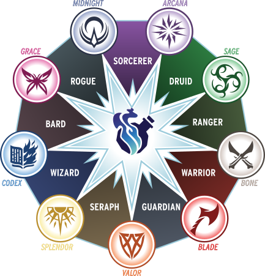
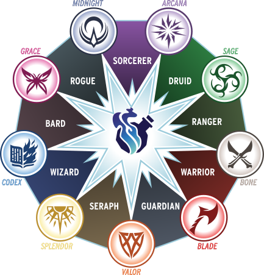

Old Gus' 匕首心 系統參考文件
version 0.99z (2025-08-17)
前言
歡迎—
Old Gus 的《匕首心》系統參考文件（OG-DHSRD） 是 《匕首心》系統參考文件 1.0 的超文字版本（2025 年 6 月 26 日修訂），© Critical Role, LLC，依據 Darrington Press 社群遊戲授權條款（DPCGL）發布。此前未經他人修改。


本文件已經過編輯與精簡。 你可以用本版本快速線上查詢《匕首心》規則、與他人分享，或將文字複製到適合你的角色卡中。但請注意，這裡的內容並非「原規則文字」。
OG-DHSRD 並非 《匕首心》核心規則書的替代品，核心規則書中包含世界觀設定、更多遊戲範例與寶貴的遊玩建議──更不用說精美的插圖，以及令人沉醉書香氣息。
感謝 Darrington Press 提供如此精彩的資源，也感謝你的閱讀──願本文件為你與夥伴帶來無數快樂的冒險！
—Old Gus
- 繁體中文編輯者：Sass
編輯使命
- 整合《匕首心》內容
- 將 《匕首心》SRD 精簡成更完整且篇幅更少的主題，並整合 《匕首心》SRD 與 《匕首心》勘誤的更新。提供對應 《匕首心》核心規則書的頁數參考，並以編註方式補充任何不一致之處。
- 使用平實語言
- 以平實語言編修解說、指令、定義與流程，使其完整、清晰、一致且精簡。同時保留 《匕首心》核心規則書的精神。修正疑似錯字，並保留角色選項、領域卡與資料塊的原文內容。
- 以玩家為先
- 將資訊組織為方便未接觸過桌上角色扮演遊戲（TTRPG）的人使用，並直接對玩家書寫──「你」指你這位玩家──或你的玩家角色。「遊戲主持人」指Game Master（GM）。
- 提升可及性與包容性
- 避免引用讀者可能沒有或無法使用的角色卡或實體卡牌。補充英制與公制的單位轉換。提供行動裝置友好格式、大量超連結、快速參考的工具提示，以及關鍵術語、可選規則與遊戲主持人工具索引。
- 100%手工編篡
- 本工具的製作未使用任何演算法機器學習或大型語言模型。
編註— 如果你願意支持這項工作，可以請 Old Gus 喝杯 ☕ Ko-fi！
什麼是《匕首心》？
- 第 4 頁
- 第 8 頁
《匕首心》是一款由 1 名遊戲主持人與 2–5 名玩家參與的桌上角色扮演遊戲，每位玩家操控一名玩家角色（PC）。遊戲可以在單場（稱為「單場遊戲」）內完成，也可以連續多場（稱為「戰役」）進行。一場遊戲通常耗時 2–4 小時。戰鬥是遊戲的重要部分。
如何遊玩《匕首心》
- 遊戲主持人描述情境、敘述事件，並操控非玩家角色、敵人與玩家角色會遭遇的障礙。
- 你扮演玩家角色對情境的反應，宣告其行動與對話。
- 若行動取決於運氣或機緣，遊戲主持人會要求進行動作擲骰。進行動作擲骰時，你需擲出二元骰——兩顆不同的十二面骰（d12）——分別代表希望與恐懼。將結果相加，並加入稱為調整值的相關加成。
- 將總和與遊戲主持人設定的難度比較。若總和大於或等於難度，即為成功；若較低，則失敗。
- 情況還會因哪顆二元骰的結果較高而變化，可能讓玩家獲得希望點，或讓遊戲主持人獲得恐懼點。

準備開始遊戲
- 編輯補充
你需要準備：
- 角色卡
- 角色卡用來記錄你玩家角色的各項數據。你可以下載官方的《匕首心》角色卡與指南，或自行製作。
- 建立角色
- 依照建立角色的流程，並將數據記錄在角色卡上。
- 卡牌與角色卡
- 官方套組包含實體卡牌與紙本角色卡以方便遊玩，但並非必須。你可以直接從本文件複製內容，並與角色卡一併記錄。也可使用可填寫的 PDF 或設置在虛擬桌面（VTT）上的角色卡——選擇最適合你的方式。
- 多面骰
- 多面骰依其面數標記——例如 d6 代表六面骰。遊戲中也會需要多顆骰——例如 2d10 代表兩顆十面骰。每位玩家至少需要 2d12 作為二元骰，以及各一顆 d20、d10、d8、d6 與 d4。在較高等級——或如果你是遊戲主持人——可能需要多顆。你可以與他人共用骰子。若無法使用實體骰，任何能產生隨機數字的方法都可——轉盤、數位應用程式或虛擬桌面（VTT）皆可。

建立角色
- 第 13 頁
除非你使用預先寫好的角色，否則你需要透過一系列選擇來建立你的玩家角色（PC），以決定你能進行哪些行動，以及在進行動作擲骰時成功的機率高低。你還會做出一些不影響遊戲機制的選擇，但它們可能對故事產生重大影響。
編註— 額外的測試版角色選項可於 《匕首心》—The Void 取得。
步驟 1：選擇職業與子職業
- 第 13 頁
步驟 4：額外數值
- 第 18 頁
記錄以下數值：
步驟 6：建立背景
- 第 19 頁
- 第 29 頁
- 第 31 頁
- 第 37 頁
- 第 39 頁
- 第 43 頁
- 第 45 頁
- 第 47 頁
- 第 49 頁
- 第 51 頁
透過回答你職業的背景問題來塑造你的背景。你或遊戲主持人可以調整或替換這些問題，以符合角色或劇情設定。
| 職業 | 背景問題 |
|---|---|
| 吟遊詩人 |
|
| 德魯伊 |
|
| 守護者 |
|
| 遊俠 |
|
| 遊蕩者 |
|
| 神使 |
|
| 術士 |
|
| 戰士 |
|
| 法師 |
|
步驟 7：建立經歷
- 第 20 頁
經歷是一個用來概括你特定技能、性格特質或才能的詞語或短語。你可以花費 1 點希望以運用經歷，將其調整值作為加值加入相關的動作擲骰中。
- 建立經歷
- 建立兩個經歷並記錄在角色卡上，每個經歷提供 +2 加值。
步驟 8：選擇領域卡
- 第 21 頁
- 第 25 頁
從你的職業所分配的領域中，選擇兩張 1 級領域卡。你的選擇將賦予你獨特的能力、法術或術典。
職業與領域
子職業調整值
如果你選擇了以下子職業，請依照說明進行調整：
 

步驟 9：建立隊伍連結
- 第 21 頁
- 第 29 頁
- 第 31 頁
- 第 37 頁
- 第 39 頁
- 第 43 頁
- 第 45 頁
- 第 47 頁
- 第 49 頁
- 第 51 頁
連結是玩家角色之間的關係。建立連結的步驟如下：
隊伍連結問題
| 職業 | 隊伍連結問題 |
|---|---|
| 吟遊詩人 |
|
| 德魯伊 |
|
| 守護者 |
|
| 遊俠 |
|
| 遊蕩者 |
|
| 神使 |
|
| 術士 |
|
| 戰士 |
|
| 法師 |
|
吟遊詩人
- 第 28 頁
吟遊詩人是全界域中最具魅力的人。他們精於吸引眾人目光，擅長各種表演形式，包括歌唱、演奏樂器、編織故事或講述笑話。無論是面對觀眾還是單獨對話，吟遊詩人在社交場合中如魚得水。這個職業的成員常在學院或行會中結交與訓練，但往往帶著一絲自負。雖然他們最有可能凝聚眾人，但脾氣不佳的吟遊詩人同樣能輕易瓦解一個團隊。
吟遊詩人的希望特性
職業特性
吟遊詩人子職業
- 第 28 頁
遊唱樂手
- 第 28 頁
若你希望透過音樂鼓舞盟友，請選擇遊唱樂手。
施法屬性
基礎特性
進階特性
樂壇泰斗：你的鼓舞樂曲能更堅定聆聽者的勇氣。當你給予盟友鼓舞骰時，他們可選擇獲得 1 點希望或清除 1 點壓力點。
精通特性
樂壇巨擘：你已登峰造極，技藝無邊。你可在每長休演奏兩次天賦藝者的三種樂曲。
言文巧匠
- 第 29 頁
若你想透過機智的言辭與巧妙的表達吸引群眾，請選擇言文巧匠。
施法屬性
基礎特性
進階特性
精通特性
德魯伊
- 第 30 頁
成為德魯伊不僅是一種職業，更是那些渴望學習並守護荒野魔法之人的使命。雖然人們可能低估那些溫和、專注於培育植物的德魯伊，但能引導自然狂野力量的德魯伊卻令人望而生畏。他們多在小型團體中修習，往往因共同信念或地緣而聯繫，但也有人選擇獨自行動。經年累月的研習與專注，使德魯伊能化身野獸，甚至塑造自然本身。
德魯伊的希望特性
幻化成獸：花費 3 點希望即可變形為野獸形態而不需標記壓力點。當你這樣做時，選擇一項屬性提升 +1，直到你解除該野獸形態為止。
職業特性
德魯伊子職業
- 第 30 頁
元素結社
- 第 30 頁
若你希望化身為荒野的自然元素，請選擇元素結社。
施法屬性
基礎特性
進階特性
元素靈氣：每休整一次，在引導期間可展現與元素對應的靈氣。靈氣在引導結束前影響鄰近範圍內的目標。
精通特性
復興結社
- 第 31 頁
若你希望運用強大的魔法療癒隊伍，請選擇復興結社。
施法屬性
基礎特性
進階特性
精通特性
野獸形態選項
- 第 32 頁
當你使用野獸形態時，選擇不高於你位階的生物類別。野獸形態依階級區分，每項內容包含解除形態前的加成效果，包括：
- 生物類別
- 該形態的角色定位或行為，並附範例。例如，迅捷斥候可為狐狸、老鼠、黃鼠狼或遊戲主持人允許的其他生物。
- 屬性
- 獲得對應屬性的加成。例如作為迅捷斥候，你的敏捷+1。
- 閃避值
- 將野獸形態的閃避值加成計入自身閃避值。例如，若你原本閃避值為 10，而迅捷斥候的加成為 +2，則你的閃避值提升至 12。
- 攻擊擲骰
- 你的攻擊擲骰改為使用該形態的距離、屬性與傷害骰。例如，1 級德魯伊的迅捷斥候可在近戰範圍內以敏捷進行攻擊，成功時造成 1d4 物理傷害。
- 優勢
- 你在與該形態活動相關的動作擲骰與反應擲骰獲得優勢。例如，迅捷斥候在潛行與搜尋物品的擲骰上獲得優勢。
- 特性
- 每種形態皆包含獨特特性。例如，迅捷斥候擅長安靜靈活的移動，但也更容易被迫解除形態。
野獸形態調整
位階 1
- 第 32 頁
深洋斥候
- 第 32 頁
（鰻魚、魚、章魚等）
兩棲：你可在水下自然呼吸與移動。
脆弱：當你受到重度或更高傷害時，會解除野獸形態。
位階 2
- 第 33 頁
位階 3
- 第 34 頁
位階 4
- 第 35 頁
守護者
- 第 36 頁
「守護者」這個稱號涵蓋了多種武技職業，其本質更多指向他們的道德準則與堅不可摧的意志，而非戰鬥方式。雖然許多守護者會加入為國家或理念而戰的軍事組織，但更多時候，他們只會追隨真正關心的少數人，不顧大多數人的想法。守護者以即便在絕對劣勢下仍能展現驚人勇武著稱，將同伴的安全置於一切之上。傷害守護者的盟友者，必將遭到等值的反擊。
守護者的希望特性
職業特性
勢不可擋： 每長休一次，你可以進入勢不可擋狀態。你獲得一顆威勢骰。在 1 級時，威勢骰為d4，並將其放在角色卡上，初始朝上數值為 1。當你進行一次傷害擲骰並對目標造成 1 點或更多生命點傷害後，將威勢骰的數值加一。當骰值超過最大值，或場景結束時，移除該骰並結束勢不可擋狀態。在 5 級時，威勢骰升為d6。
處於勢不可擋時，你獲得以下效果：
詳情見全文。
守護者子職業
- 第 36 頁
進階特性
精通特性
遊俠
- 第 38 頁
遊俠是技藝高超的獵人，即使擁有高超武技，也鮮少將自身本領奉獻給軍隊。憑藉對身體的精準掌控與對荒野的深刻理解，遊俠成為狡黠的戰術家，以耐心與機智追獵獵物。許多遊俠會與一位締結了強大精神連結的動物夥伴並肩作戰。通過在荒野中磨練技巧，遊俠成為追蹤專家，既擅長設下陷阱捕捉敵人，也能正面迎擊。
遊俠的希望特性
職業特性
遊俠子職業
- 第 38 頁
馴獸大師
- 第 38 頁
若你想與動物盟友建立深厚羈絆，請選擇馴獸大師。
施法屬性
基礎特性
進階特性
精通特性
馴獸大師夥伴
- 第 40 頁
- 夥伴基礎
- 與主持人協作選擇動物類型、名字，並創造兩個經歷。
- 使用施法擲骰、希望點與經歷
- 進行一次施法擲骰以指揮夥伴進行行動，並可花費 1 希望點，加入相關夥伴經歷的調整值。若取得希望成功，且你的下一個行動延續了夥伴的成功，你該次擲骰獲得優勢。
- 使用夥伴攻擊
- 夥伴的攻擊擲骰可享受原本只適用於你的加值，例如遊俠專注。夥伴的傷害擲骰使用你的熟練值與夥伴的傷害骰。例如在1 級時，夥伴造成1d6傷害。
- 以壓力點承受傷害
- 當夥伴將受到任意傷害時，改為標記 1 個壓力點。若你選擇的休整行動可清除自身壓力，夥伴也可等量清除。當其最後一個壓力點被標記時，牠會退出場景，直到你的下一次長休開始時清除 1 個壓力點並回到你身邊。
夥伴等級
- 第 40 頁
當你獲得等級時，從以下清單中為你的夥伴選擇一個可用選項。具有多個槽位的選項可重複選擇。每次選擇升級時，標記其中一個槽位。
此外，每當你因達到新位階而獲得新的經歷時，你的夥伴也會獲得一個 +2 的新經歷。
遊俠夥伴升級
| 升級 | 說明 | 槽位數 |
|---|---|---|
| 智慧 | 夥伴的某個經歷獲得 +1 加值。 | 3 |
| 黑暗中的微光 | 夥伴獲得一個希望點槽位，你可如同使用自己的希望點般使用。 | 1 |
| 心靈慰藉 | 每休整一次，你們可共享愛與陪伴，並選擇以下其中一項效果： | 1 |
| 裝甲 | 當夥伴受到傷害時，你可以標記 1 個護甲槽，代替其標記壓力點。 | 1 |
| 兇悍 | 你可以選擇以下其中一種方式強化夥伴的標準攻擊： | 3 |
| 堅韌 | 夥伴獲得 1 個壓力點槽位。 | 3 |
| 羈絆 | 當你標記最後一個生命點時，你的夥伴會衝到你身邊。擲出等同於其未標記壓力點槽位數的d6並標記它們。若其中任何一顆d6擲出 6，你的夥伴會將你扶起，你清除最後一個生命點，並重返戰場。 | 1 |
| 警覺 | 夥伴的閃避值獲得 +1 加值。 | 3 |
遊蕩者
- 第 42 頁
- 勘誤
遊蕩者是徹頭徹尾的惡棍，無論在態度還是行為上皆是如此。雖然普遍被視為騙子與竊賊，但其中的佼佼者能在世間無聲無息地行走。憑藉敏銳的機智與刀鋒，遊蕩者既能以社交操弄戲弄敵人，也能輕鬆開鎖、攀窗入室，或施展陰險一擊。這些精通魔法技藝的高手能操縱陰影與動作，為武器庫增添實用且致命的手段。遊蕩者常建立公會以結識同道、承接任務、磨練秘術，證明在知情者之間，盜亦有道。
遊蕩者的希望特性
職業特性
遊蕩者子職業
- 第 42 頁
黑夜行者
- 第 42 頁
若你想操縱陰影穿梭環境，請選擇黑夜行者。
施法屬性
基礎特性
進階特性
精通特性
幫派豪傑
- 第 43 頁
若你想在任何地方都擁有龐大人脈，請選擇幫派豪傑。
施法屬性
基礎特性
交際達人： 當你抵達一個重要城鎮或地區時，你會認識一位以此為家的熟人。為他們取名，註記你認為他們的用途，並從下列事實中選擇一項：
- 他們欠我一個人情，但很難找到。
- 他們會要求交換某些東西。
- 他們總是惹上大麻煩。
- 我們曾經在一起，說來話長。
- 我們分開時關係並不融洽。
進階特性
神通廣大： 每場遊戲一次，你可以短暫呼叫一位可疑的聯絡人。選擇下列一項好處，並描述他們此刻是如何出現幫助你的：
精通特性
神使
- 第 44 頁
神使是受神聖使命所賦予的神聖戰士與治癒者。
神使的希望特性
- 第 44 頁
職業特性
- 第 44 頁
神使子職業
- 第 44 頁
神兵馭者
- 第 44 頁
若你想以傳說武器主宰戰場，請選擇神兵馭者。
施法屬性
基礎特性
進階特性
堅定信仰： 擲虔信骰時，可額外擲 1 顆並捨棄最低值。此外，你的憐憫之觸可在每長休使用兩次。
精通特性
神聖共鳴： 當你為靈魂武器擲傷害骰時，若有相同點數，將每個相同骰值加倍。例如，若你擲出兩個 5，則計為兩個 10。
術士
- 第 46 頁
並非所有天生具備魔法的人都選擇精進技藝，但那些願意磨練自身的人，能成為強大的術士。
術士的希望特性
職業特性
術士子職業
- 第 46 頁
元素起源
- 第 46 頁
若你想將原始魔力化為特定元素的形態，請選擇元素起源。
施法屬性
基礎特性
進階特性
精通特性
原初起源
- 第 47 頁
若你想以強大方式拓展法術的多樣性，請選擇原初起源。
施法屬性
基礎特性
進階特性
精通特性
戰士子職業
- 第 48 頁
勇氣呼喚
- 第 48 頁
若你想利用敵人的力量為己所用，請選擇勇氣呼喚。
基礎特性
進階特性
精通特性
法師
- 第 50 頁
無論是透過學院教育還是個人修習，法師經由多年學習，運用書籍、石頭、藥劑與草藥等各式工具，習得並精煉龐大的魔法力量。
法師的希望特性
職業特性
法師子職業
- 第 50 頁
知識學派
- 第 50 頁
若你想深入理解周遭世界，請選擇知識學派。
施法屬性
基礎特性
進階特性
精通特性
配置與寶庫
- 第 101 頁
- 第 107 頁
領域卡參考
奧術領域卡
- 第 328 頁
利刃領域卡牌
- 第 329 頁
骸骨領域卡
- 第 331 頁
典籍領域卡
- 第 332 頁
優雅領域卡
- 第 334 頁
感官共享
- 第 334 頁
- 等級 4 優雅法術
- 回想費用：1
-
選擇一個極遠範圍內的目標，你可以透過其雙眼觀看並透過其雙耳聆聽。在你施放其他法術前或直到你的下一次休整，可自由切換使用自己的感官或目標的感官。
午夜領域卡牌
- 第 336 頁
妙手空空
- 第 336 頁
- 1級 午夜 能力
- 回想費用：0
-
你在進行動作擲骰以撬開非魔法鎖、解除非魔法陷阱，或從目標身上偷取物品（無論是透過潛行還是強奪）時，獲得優勢。
滂沱劍雨
- 第 336 頁
- 1級 午夜 法術
- 回想費用：1
-
花費1希望點進行施法擲骰，召喚飛刃襲擊所有鄰近範圍內的目標。對擲骰成功的目標造成d8+2的魔法傷害，使用你的熟練值。
若命中的目標處於脆弱狀態，則額外受到1d8傷害。
奇異偽裝
- 第 336 頁
- 1級 午夜 法術
- 回想費用：0
-
當你有幾分鐘的準備時間時，可以標記 1 壓力點，化身為腦中能夠清晰想像的任意類人生物外貌。在偽裝期間，你在進行存在感擲骰以避免被識破時獲得優勢。
將等同於你的施法屬性數量的指示物放在此卡上。當你在偽裝狀態下採取行動時，消耗此卡上的一個指示物。在消耗最後一個指示物的行動結束後，偽裝即解除。
午夜精魂
- 第 336 頁
- 2級 午夜 法術
- 回想費用：1
-
花費1希望點召喚一個類人大小的精魂，直到你下次休息前可替你移動或搬運物品。
你也可以指使它攻擊敵人。當你這樣做時，對鄰近範圍內的目標進行施法擲骰。成功時，精魂會移至該目標的近戰範圍，擲出等同於你施法屬性的d6數量，並造成等量的魔法傷害，之後精魂消散。你一次只能存在一個精魂。
暗影束縛
- 第 336 頁
- 2級 午夜 法術
- 回想費用：0
-
對所有鄰近範圍內的敵人進行施法擲骰。成功的目標會被暫時束縛，因其影子將其定在原地。
鎖喉勒頸
- 第 336 頁
- 3級 午夜 能力
- 回想費用：1
-
當你站位於與你體型相近的生物背後時，可以標記 1 壓力點將其拉入鎖喉，使其暫時脆弱。
當有生物攻擊此方式造成脆弱的目標時，額外造成2d6傷害。
暗夜帷幕
- 第 336 頁
- 3級 午夜 法術
- 回想費用：1
-
進行施法擲骰（13）。成功時，可在遠距範圍內兩點之間創造一道暫時的黑暗幕簾，只有你能透視。幕簾另一側的敵人會視你為隱匿，且你對穿越黑暗進行的攻擊獲得優勢。此帷幕持續至你施放下一個法術為止。
夜幕符文
- 第 336 頁
- 4級 午夜 法術
- 回想費用：1
-
對鄰近範圍內的目標進行施法擲骰。成功時，花費1希望點在其身上刻印黑暗符文，暴露其弱點，暫時降低目標的難度值，減少數值等同於你的知識（至少 1）。
潛行專家
- 第 336 頁
- 4級 午夜 能力
- 回想費用：0
-
當你在危險地區嘗試不被察覺地移動並以恐懼進行動作擲骰時，可以標記 1 壓力點改為以希望進行動作擲骰。
若鄰近範圍內的盟友同樣嘗試不被察覺且以恐懼進行動作擲骰，你可以標記 1 壓力點將其結果改為以希望擲骰。
沉默不言
- 第 336 頁
- 5級 午夜 法術
- 回想費用：1
-
對近距離範圍內的目標進行施法擲骰。成功時，花費1希望點在目標周圍施放壓制性魔法，影響其鄰近範圍內的一切，並隨其移動。
目標與範圍內的一切會陷入沉默狀態，直到遊戲主持人在其回合花費1恐懼點清除此狀態、你再次施放沉默不言、或你受到重大傷害為止。沉默狀態下，他們無法發聲也無法施法。
移形換影
- 第 336 頁
- 5級 午夜 法術
- 回想費用：2
-
花費1希望點啟動移形換影，記錄當前所在位置。在下次休息前的任意時間，你可再花費1希望點，瞬間從現位置消失並回到啟動時所處的位置。施法在你回到原位置後結束。
黑暗低語
- 第 336 頁
- 6級 午夜 法術
- 回想費用：0
-
你可以對曾與你有過肢體接觸的人直接以心靈傳音，並在建立連結後讓對方以同樣方式回覆。此外，你可以標記 1 壓力點對其進行施法擲骰。成功時，你可以向遊戲主持人詢問以下其中一個問題並獲得答案：
- 他們在哪裡？
- 他們在做什麼？
- 他們害怕什麼？
- 他們在世上最珍視的是什麼？
群體偽裝
- 第 336 頁
- 6級 午夜 法術
- 回想費用：0
-
當你有數分鐘的安靜時間專注時，可標記 1 壓力點改變所有鄰近範圍內自願生物的外貌。新形態必須具備相同的一般身體結構與尺寸，可為你曾見過的人事物，也可完全虛構。處於偽裝狀態的生物在進行存在感擲骰以避免被識破時獲得優勢。
啟動一個倒計時（8），由遊戲主持人選擇的後果使其遞減，當倒計時觸發時，偽裝解除。
午夜恩澤
- 第 337 頁
- 7級 午夜 能力
- 回想費用：2
-
當你的配置中有4張或以上的領域卡來自午夜領域時，獲得以下效果：
- 每次休整一次，當你擁有0希望且遊戲主持人將獲得1恐懼時，你可以改為獲得1希望。
- 當你成功進行一次攻擊時，可標記 1 壓力點，將恐懼骰的擲骰結果加入你的傷害擲骰中。
無蹤影遁
- 第 337 頁
- 7級 午夜 法術
- 回想費用：1
-
當一次對你造成物理傷害的攻擊失敗時，你可以花費1希望點將自己包裹於暗影之中，變為隱匿狀態，並瞬移至攻擊者鄰近範圍內的任意位置。你將保持隱匿狀態直到下次進行動作擲骰為止。
暗影獵手
- 第 337 頁
- 8級 午夜 能力
- 回想費用：2
-
你的實力在暗影掩護下更加卓越。當你處於微光或黑暗環境中時，閃避值+1，且進行攻擊擲骰時獲得優勢。
法術充能
- 第 337 頁
- 8級 午夜 法術
- 回想費用：1
-
當你受到魔法傷害時，將等同於你所標記生命點的數量作為指示物放在此卡上。你最多可儲存等同於你的施法屬性的指示物數量。
當你成功攻擊一個目標時，可以消耗任意數量的指示物，每消耗1個指示物，為你的傷害擲骰額外增加1顆d6。
夜魘降臨
- 第 337 頁
- 9級 午夜 法術
- 回想費用：2
-
每長休一次，可選擇鄰近範圍內的任意目標，使其將你視為夢魘恐懼。目標必須成功通過反應擲骰（16），否則暫時陷入驚駭狀態。在驚駭狀態下，其處於脆弱。
從遊戲主持人處竊取等同於陷入驚駭目標數量的恐懼點（上限為主持人恐懼池的現有值）。擲出等同於竊取恐懼點數的d6，並將總和作為傷害對每個驚駭目標造成。之後棄掉所竊取的恐懼點。
暮光喪鐘
- 第 337 頁
- 9級 午夜 能力
- 回想費用：1
-
選擇一個遠距範圍內的目標。當你對其成功進行一次不會造成傷害擲骰的動作擲骰時，在此卡上放置一個指示物。當你對該目標造成傷害時，可消耗任意數量的指示物，每消耗1個，為你的傷害擲骰額外增加1顆d12。
同一時間內，暮光喪鐘只能作用於一個目標。當你選擇新目標或進行休整時，清除所有未使用的指示物。
日蝕無光
- 第 337 頁
- 10級 午夜 法術
- 回想費用：2
-
進行施法擲骰（16）。每長休一次，成功時可將遠距範圍內的整個區域陷入完全黑暗，只有你與盟友能看穿。敵人對你或盟友的攻擊擲骰具有劣勢。
此外，當你或盟友在此黑暗中以希望成功對敵人行動時，該目標必須標記 1 壓力點。此法術持續至遊戲主持人在其回合花費1恐懼點清除此效果，或你受到嚴重傷害為止。
黑暗幽影
- 第 337 頁
- 10級 午夜 法術
- 回想費用：1
-
標記 1 壓力點，化為幽影狀態，直到你對另一個生物進行動作擲骰為止。在幽影狀態下，你免疫物理傷害，並可漂浮與穿越固體物體。其他生物仍可看見你。
賢者領域卡
- 第 338 頁
追獵才能
- 第 338 頁
- 1級 賢者能力
- 回想費用：0
-
當你根據行蹤跡象追蹤特定生物或一群生物時，你可以花費任意數量的希望點，並向遊戲主持人提出同等數量的下列問題：
- 牠們往哪個方向去了？
- 牠們多久以前經過這裡？
- 牠們在此地做了什麼？
- 牠們有多少人？
當你遇到以此方式追蹤的生物時，對牠們的閃避值獲得+1加值。
召喚坐騎
- 第 339 頁
- 6級 賢者法術
- 回想費用：0
-
花費任意數量的希望點，召喚等同數量的魔法坐騎（如馬、駱駝或大象），供你與盟友騎乘，直到你的下一次長休或坐騎受到任何傷害為止。坐騎可使你的陸地移動速度加倍，並在危險情況下讓你在不擲骰的情況下移動至遠距離。騎乘坐騎的生物在攻擊擲骰上承受-2減值，並在傷害擲骰上獲得+2加值。
狂野浪湧
- 第 339 頁
- 7級 賢者法術
- 回想費用：2
-
每長休一次，你可以標記1壓力點以引導周遭自然之力強化自身。描述你的外貌如何改變，然後在此卡上放置一顆d6，點數朝上為1。
當狂野浪湧骰存在時，你的每次動作擲骰都會額外加上該骰的數值。每次使用後，將狂野浪湧骰的數值加1。當該骰數值將超過6，或你進行休整時，此形態結束，且你必須額外標記 1 壓力點。
輝耀領域卡牌
- 第 340 頁
救贖光束
- 第 341 頁
- 9 級 輝耀法術
- 回想費用：2
-
進行一次施法擲骰 (16)。成功時，標記任意數量的壓力點，以鎖定遠距離範圍內呈直線的盟友，清除等同於所標記壓力點數量的生命點，可任意分配於目標之間。
壯舉再現
- 第 341 頁
- 10 級 輝耀法術
- 回想費用：3
-
當你或近距離範圍內的盟友使用了一個具有限次使用限制（例如每休整一次或每場遊戲一次）的特性時，你可以花費任意數量的希望點並擲出相同數量的d6。若任一骰擲出6，該特性能再次使用。
勇氣領域卡
- 第 341 頁
種族
- 第 52 頁
種族代表玩家角色的血統與外貌。以下章節描述每個種族，並列出該種族大多數成員所共有的特性，但每位玩家可自行決定其角色與該種族典型特徵的契合程度。
在《匕首心》核心資料中共有十八個種族。
種族特性
每個種族會賦予兩項種族特性。雖然有些特性──例如飛行能力──會明顯與解剖構造相關，但你的角色外貌仍由你決定。若有任何隱含特徵與你的角色概念不符，請與遊戲主持人協商進行修改。
械靈
- 第 53 頁
械靈是由多種材質（包括金屬、木材與石頭）製成的具備智慧的機械生命體。
種族特性
龍人
- 第 54 頁
龍人外形似無翼的人形巨龍，並擁有強大的元素吐息。
種族特性
矮人
- 第 55 頁
矮人是身材矮小、體格方正、肌肉緊實且毛髮濃密的類人生物。
種族特性
精靈
- 第 56 頁
精靈通常是高挑的人形種族，擁有尖耳與靈敏的感官。
種族特性
仙靈
- 第 57 頁
仙靈是擁有昆蟲特徵的有翼類人生物。
種族特性
羊蹄人
- 第 58 頁
羊蹄人外貌似人形山羊，具有彎曲的角、方形瞳孔與分趾蹄。
種族特性
費爾博格
- 第 59 頁
費爾博格是牛類特徵的類人生物，通常以寬闊的鼻樑與長而下垂的耳朵為識別特徵。
種族特性
孢菌人
- 第 60 頁
孢菌人外貌如人形蘑菇。
種族特性
龜人
- 第 61 頁
龜人外形似擬人化烏龜，背負巨大的圓頂甲殼，可將身體縮入其中。
種族特性
巨人
- 第 62 頁
巨人是高大魁梧的類人生物，擁有寬闊的肩膀、修長的手臂，以及一至三隻眼睛。
種族特性
哥布林
- 第 63 頁
哥布林是身材矮小的類人生物，以大眼睛和巨大的膜質耳朵聞名。
種族特性
半身人
- 第 64 頁
半身人是小型類人生物，擁有多毛的大腳與明顯的圓耳。
種族特性
人類
- 第 65 頁
人類以靈巧的雙手、圓耳，以及為耐力而設計的身體最易辨識。
種族特性
貓族
- 第 67 頁
貓族是具有可伸縮爪、垂直瞳孔與高聳三角耳的貓科類人生物。
種族特性
獸人
- 第 68 頁
獸人是以方正的面容與突出下顎的野豬獠牙聞名的類人生物。
種族特性
蛙裔
- 第 69 頁
蛙裔是外形似擬人化青蛙的種族，擁有外突的眼睛與有蹼的手腳。
種族特性
混血種族
- 第 71 頁
家庭如同構成它們的族群與文化一樣獨特。任何人的外貌與能力都可能受到血統、魔法、環境或其他各種因素的影響。若你是多個種族的後裔，請依以下步驟進行：
步驟 1：選擇種族組合
在建立角色時，寫下你自我認同的方式。例如，若你的血統來自哥布林與獸人，你可以稱自己為哥布林-獸人。你也可以選擇其中一個你認同的種族──哥布林或獸人。又或者，你可以為自己的種族創造一個新名稱──例如牙靈。
步驟 2：選擇種族特性
從一個種族中選擇第一項特性，再從另一個種族中選擇第二項特性。例如，若你混合了哥布林與獸人的血統，你可以選擇穩健腳步與獠牙，或強壯與危險感應作為你的特性。
隨機混血種族特性
- 編輯補充
| 種族 | 特性 |
|---|---|
| — | — |
| — | — |
高城之民
- 第 73 頁
身為高城之民，意味著你習慣於社會上層優雅、奢華與聲望並存的生活。
高城之民往往友善、坦率、狡詐、進取、鋪張且沉著。
社群特性
貴族身份： 在與貴族交際、議價，或利用聲望達成目的的擲骰上獲得優勢。
博識之民
- 第 74 頁
身為博識之民，意味著你來自重視卓越學術或政治才能的社會。
博識之民往往直率、雄辯、好奇、耐心、充滿熱情且機智。
社群特性
博覽群書： 在涉及知名人物或地點的歷史、文化或政治的擲骰上獲得優勢。
結社之民
- 第 75 頁
身為結社之民，意味著你來自一個重視紀律或信仰的群體，並秉持一套反映你成長經歷的原則。
結社之民往往雄心勃勃、仁慈、沉思、審慎、挖苦且沉著。
社群特性
山嶺之民
- 第 76 頁
身為山嶺之民，意味著你以多岩的山巔與峭壁為家。
山嶺之民往往大膽、強健、不屈、忠誠、內斂且固執。
社群特性
腳踏實地： 在穿越危險懸崖與峭壁、於惡劣環境中行進，以及運用生存知識的擲骰上獲得優勢。
濱海之民
- 第 77 頁
身為濱海之民，意味著你生活在大型水域之上或附近。
濱海之民往往坦率、合作、熱情、剛烈、堅決且歷經風霜。
社群特性
法外之民
- 第 78 頁
身為法外之民，意味著你來自一個遊走於法律之外的群體，包括各種罪犯、詐騙者與騙術師。
法外之民往往精於算計、聰明、強悍、敏銳、精明且頑強。
社群特性
惡貫滿盈： 在與罪犯談判、識破謊言或尋找安全藏身處的擲骰上獲得優勢。
地下之民
- 第 79 頁
身為地下之民，意味著你來自一個地下社會。許多地下之民生活在其他聚落的城市與村莊正下方，另有一些則居於更深處。
地下之民往往沉著、難以捉摸、不屈、創新、足智多謀且樸實。
社群特性
微光生存： 當你位於光線昏暗或陰影濃重的區域時，在該區域內進行隱匿、調查或察覺細節的擲骰上獲得優勢。
漂泊之民
- 第 80 頁
身為漂泊之民，意味著你以遊牧為生，沒有固定住所，並體驗過多元的文化。
漂泊之民往往難以看透、寬宏、風趣、可靠、精明且不拘一格。
社群特性
遊牧行囊： 將一個遊牧行囊加入你的物品欄。每場遊戲可花費 1 希望點，從此行囊中取出一件對當前情況有幫助的普通物品，並與主持人一同決定該物品為何。
屬性
- 第 17 頁
你擁有六項屬性，代表你的身體、心智能力與社交能力。
經歷
- 第 20 頁
- 第 93 頁
經歷是一個能喚起你所獲得的性格特質或才能的詞語或片語。經歷可以與你的背景、特性、專長或技能相關。
希望點
- 第 90 頁
你在建立角色時擁有 2 點希望，並在擲出希望結果時額外獲得 1 點。你最多可擁有 6 格希望槽。希望會在場次之間保留。
花費希望點
- 協助盟友（1 點希望）
- 你協助一名玩家角色進行動作擲骰。描述你如何提供幫助，擲出你自己的優勢骰，並將結果作為調整值加到對方的擲骰中。若該玩家角色從多個來源獲得優勢，只取所有優勢骰中最高的結果。
- 運用經歷（1 點以上希望）
- 當你在相關擲骰中運用經歷時，將其調整值加到結果中。你可以額外花費希望以運用更多相關的經歷。
- 接力擲骰（3 點希望）
- 發起一次接力擲骰。
- 職業希望特性（3 點希望）
- 每個職業都有對應的職業希望特性。
- 其他希望用途（1 點以上希望）
- 其他希望用途由職業或子職業特性、領域卡與裝備所定義。
- 擲出希望結果
- 若你在領域卡或希望特性促使的行動中擲出希望結果，你可以在該行動中花費此次擲骰所獲得的希望。
獲得等級
- 第 109 頁
- 第 110 頁
- 第 111 頁
當遊戲主持人決定你已達成敘事上的里程碑時（通常約每 3 場遊戲一次），玩家角色便會獲得一個等級。
每次獲得等級時，依照以下四個步驟進行：
裝備
- 頁面 112
- 頁面 115
- 勘誤
武器
- 頁面 96
- 頁面 112
- 頁面 113
- 勘誤
- 裝備武器
- 你可以裝備最多兩把使用中武器──一把主武器與一把副武器。你不能用非使用中的武器攻擊，且不能裝備階級高於你自身位階的武器。你可以攜帶兩把背包武器。你可以在休整或平靜時刻將背包武器與使用中武器交換。在危險情況下，你必須標記 1 點壓力點才能交換武器。
- 屬性
- 作為一次行動，你可以使用一把使用中武器進行攻擊，並使用該武器指定的屬性來進行攻擊擲骰。
- 射程
- 你與目標之間的最大射程。
- 傷害
- 成功攻擊時擲出的傷害骰。若包含調整值，則將其加到總值。
- 傷害類型
- 造成魔法傷害的武器需要具備施法屬性才能使用。
- 負荷
- 武器在使用中時所佔用的雙手數量。你共有兩隻手。
- 特性
- 部分武器在使用中時會具有特殊屬性或特性。
- 投擲武器
- 你可以進行一次靈巧攻擊擲骰，將使用中武器投擲至鄰近範圍內，成功則造成該武器的傷害。一旦投擲後，該武器即不再是使用中狀態。
- 徒手攻擊
- 除非主持人另有允許，否則使用力量或靈巧進行攻擊擲骰，並造成d4物理傷害。
主武器列表
- 頁面 115
位階 1（等級 1）
- 頁面 115
物理武器
- 頁面 115
- 勘誤
| 名稱 | 屬性 | 射程 | 傷害 | 負荷 | 特性 |
|---|---|---|---|---|---|
| 闊劍 | 敏捷 | 近戰 | d8 物 | 單手 | 可靠：攻擊擲骰+1 |
| 長劍 | 敏捷 | 近戰 | d10+3 物 | 雙手 | — |
| 戰斧 | 力量 | 近戰 | d10+3 物 | 雙手 | — |
| 巨劍 | 力量 | 近戰 | d10+3 物 | 雙手 | 巨型：閃避值-1；成功攻擊時，額外擲一次傷害骰並去掉其中最低的結果。 |
| 釘頭錘 | 力量 | 近戰 | d8+1 物 | 單手 | — |
| 戰鎚 | 力量 | 近戰 | d12+3 物 | 雙手 | 重型：閃避值-1 |
| 匕首 | 靈巧 | 近戰 | d8+1 物 | 單手 | — |
| 長棍 | 本能 | 近戰 | d10+3 物 | 雙手 | — |
| 彎刀 | 風度 | 近戰 | d8+1 物 | 單手 | — |
| 刺劍 | 風度 | 近戰 | d8 物 | 單手 | 迅捷：當你進行攻擊時，你可以標記 1 壓力點以額外攻擊一個在射程內的目標。 |
| 戟 | 力量 | 鄰近 | d10+2 物 | 雙手 | 繁瑣：靈巧-1 |
| 長矛 | 靈巧 | 鄰近 | d8+3 物 | 雙手 | — |
| 短弓 | 敏捷 | 遠距離 | d6+3 物 | 雙手 | — |
| 弩 | 靈巧 | 遠距離 | d6+1 物 | 單手 | — |
| 長弓 | 敏捷 | 極遠距 | d8+3 物 | 雙手 | 繁瑣：靈巧-1 |
魔法武器
- 頁面 115
- 勘誤
| 名稱 | 屬性 | 射程 | 傷害 | 負荷 | 特性 |
|---|---|---|---|---|---|
| 奧術護手 | 力量 | 近戰 | d10+3 魔 | 雙手 | — |
| 聖斧 | 力量 | 近戰 | d8+1 魔 | 單手 | — |
| 發光戒指 | 敏捷 | 鄰近 | d10+2 魔 | 雙手 | — |
| 手持符文 | 本能 | 鄰近 | d10 魔 | 單手 | — |
| 回力劍 | 靈巧 | 鄰近範圍 | d8 魔 | 單手 | 回力：當此武器在其射程內被投擲後，會在完成攻擊的瞬間重新出現在你手中。 |
| 短杖 | 本能 | 鄰近範圍 | d8+1 魔 | 單手 | — |
| 雙手法杖 | 本能 | 遠距離 | d6+3 魔 | 雙手 | — |
| 權杖 | 風度 | 遠距離 | d6 魔 | 雙手 | 多用：此武器也可以以下數據使用——風度、近戰、d8。 |
| 魔杖 | 知識 | 遠距離 | d6+1 魔 | 單手 | — |
| 巨杖 | 知識 | 極遠距 | d6 魔 | 雙手 | 強力：成功攻擊時，額外擲一次傷害骰並去掉其中最低的結果。 |
位階 2（等級 2–4）
- 頁面 116
物理武器
- 頁面 116
- 勘誤
| 名稱 | 屬性 | 射程 | 傷害 | 負荷 | 特性 |
|---|---|---|---|---|---|
| 改良闊劍 | 敏捷 | 近戰 | d8+3 物 | 單手 | 可靠：攻擊擲骰+1 |
| 改良長劍 | 敏捷 | 近戰 | d10+6 物 | 雙手 | — |
| 改良戰斧 | 力量 | 近戰 | d10+6 物 | 雙手 | — |
| 改良巨劍 | 力量 | 近戰 | d10+6 物 | 雙手 | 巨型：閃避值-1；成功攻擊時，額外擲一次傷害骰並去掉其中最低的結果。 |
| 改良釘頭錘 | 力量 | 近戰 | d8+4 物 | 單手 | — |
| 改良戰鎚 | 力量 | 近戰 | d12+6 物 | 雙手 | 重型：閃避值-1 |
| 改良匕首 | 靈巧 | 近戰 | d8+4 物 | 單手 | — |
| 改良長棍 | 本能 | 近戰 | d10+6 物 | 雙手 | — |
| 改良彎刀 | 風度 | 近戰 | d8+4 物 | 單手 | — |
| 改良刺劍 | 風度 | 近戰 | d8+3 物 | 單手 | 迅捷：當你進行攻擊時，你可以標記 1 壓力點以額外攻擊一個在射程內的目標。 |
| 改良戟 | 力量 | 鄰近 | d10+5 物 | 雙手 | 繁瑣：靈巧-1 |
| 改良長槍 | 靈巧 | 鄰近 | d8+6 物 | 雙手 | — |
| 改良短弓 | 敏捷 | 遠距離 | d6+6 物 | 雙手 | — |
| 改良弩 | 靈巧 | 遠距離 | d6+4 物 | 單手 | — |
| 改良長弓 | 敏捷 | 極遠距 | d8+6 物 | 雙手 | 繁瑣：靈巧-1 |
| 鍍金彎刀 | 力量 | 近戰 | d10+4 物 | 單手 | 強力：成功攻擊時，額外擲一次傷害骰並去掉其中最低的結果。 |
| 拳刃 | 力量 | 近戰 | d10+6 物 | 單手 | 殘暴：當你在傷害骰擲出最大值時，額外擲一次傷害骰。 |
| 烏洛克闊劍 | 靈巧 | 近戰 | d8+3 物 | 單手 | 致命：當你造成嚴重傷害時，目標必須額外標記 1 點生命點。 |
| 刃鞭 | 敏捷 | 鄰近 | d8+3 物 | 單手 | 迅捷：當你進行攻擊時，你可以標記 1 壓力點以額外攻擊一個在射程內的目標。 |
| 鋼鑄戟 | 力量 | 鄰近 | d8+4 物 | 雙手 | 恐怖：成功攻擊時，目標必須標記 1 點壓力點。 |
| 戰鐮 | 靈巧 | 鄰近 | d8+5 物 | 雙手 | 可靠：攻擊擲骰+1 |
| 火繩槍 | 靈巧 | 鄰近範圍 | d8+6 物 | 雙手 | 裝填：在進行攻擊後擲 1 顆d6，若結果為 1，則你必須標記 1 點壓力點才能在下次射擊前重新裝填此武器。 |
| 巨弓 | 力量 | 遠距離 | d6+6 物 | 雙手 | 強力：成功攻擊時，額外擲一次傷害骰並去掉其中最低的結果。 |
| 細弦弓 | 敏捷 | 極遠距 | d6+5 物 | 雙手 | 可靠：攻擊擲骰+1 |
魔法武器
- 頁面 117
| 名稱 | 屬性 | 射程 | 傷害 | 負荷 | 特性 |
|---|---|---|---|---|---|
| 改良奧術護手 | 力量 | 近戰 | d10+6 魔 | 雙手 | — |
| 改良聖斧 | 力量 | 近戰 | d8+4 魔 | 單手 | — |
| 改良發光戒指 | 敏捷 | 鄰近 | d10+5 魔 | 雙手 | — |
| 改良手持符文 | 本能 | 鄰近 | d10+3 魔 | 單手 | — |
| 改良回力劍 | 靈巧 | 鄰近範圍 | d8+3 魔 | 單手 | 回力：當此武器在其射程內被投擲後，會在完成攻擊的瞬間重新出現在你手中。 |
| 改良短杖 | 本能 | 鄰近範圍 | d8+4 魔 | 單手 | — |
| 改良雙手法杖 | 本能 | 遠距離 | d6+6 魔 | 雙手 | — |
| 改良權杖 | 風度 | 遠距離 | d6+3 魔 | 雙手 | 多用：此武器也可以以下數據使用——風度、近戰、d8+3。 |
| 改良魔杖 | 知識 | 遠距離 | d6+4 魔 | 單手 | — |
| 改良巨杖 | 知識 | 極遠距 | d6+3 魔 | 雙手 | 強力：成功攻擊時，額外擲一次傷害骰並去掉其中最低的結果。 |
| 自我之刃 | 敏捷 | 近戰 | d12+4 魔 | 單手 | 自負：你的風度必須為 0 或更低才能使用此武器。 |
| 施法劍 | 力量 | 近戰 | d10+4 魔 | 雙手 | 多用：此武器也可以以下數據使用——知識、遠距離、d6+3。 |
| 吞噬匕首 | 靈巧 | 近戰 | d8+4 魔 | 單手 | 恐怖：成功攻擊時，目標必須標記 1 點壓力點。 |
| 異界之鎚 | 本能 | 近戰 | d8+6 魔 | 雙手 | 爆發：對近戰範圍內目標成功攻擊時，所有位於鄰近範圍內的其他敵人必須進行一次反應擲骰（14），否則將承受一半傷害。 |
| 尤塔里血弓 | 靈巧 | 遠距離 | d6+4 魔 | 雙手 | 殘暴：當你在傷害骰擲出最大值時，額外擲一次傷害骰。 |
| 長者之弓 | 本能 | 遠距離 | d6+4 魔 | 雙手 | 強力：成功攻擊時，額外擲一次傷害骰並去掉其中最低的結果。 |
| 伊利亞斯權杖 | 風度 | 遠距離 | d6+3 魔 | 單手 | 鼓舞：成功攻擊時，擲 1 顆d4，若結果為 4，則清除 1 點壓力點。 |
| 迷惑魔仗 | 風度 | 遠距離 | d6+4 魔 | 單手 | 說服：在你進行風度擲骰前，你可以標記 1 壓力點以獲得+2 結果加值。 |
| 看守者之杖 | 知識 | 遠距離 | d6+4 魔 | 雙手 | 可靠：攻擊擲骰+1 |
位階 3（等級 5–7）
- 頁面 118
物理武器
- 頁面 118
- 勘誤
| 名稱 | 屬性 | 距離 | 傷害 | 負荷 | 特性 |
|---|---|---|---|---|---|
| 高級闊劍 | 敏捷 | 近戰 | d8+6 物理 | 單手 | 可靠: 攻擊擲骰+1 |
| 高級長劍 | 敏捷 | 近戰 | d10+9 物理 | 雙手 | — |
| 高級戰斧 | 力量 | 近戰 | d10+9 物理 | 雙手 | — |
| 高級巨劍 | 力量 | 近戰 | d10+9 物理 | 雙手 | 巨型: 閃避值-1；成功攻擊時，額外擲一個傷害骰並去掉最低結果。 |
| 高級釘頭鎚 | 力量 | 近戰 | d8+7 物理 | 單手 | — |
| 高級戰鎚 | 力量 | 近戰 | d12+9 物理 | 雙手 | 重型: 閃避值-1 |
| 高級匕首 | 靈巧 | 近戰 | d8+7 物理 | 單手 | — |
| 高級長棍 | 本能 | 近戰 | d10+9 物理 | 雙手 | — |
| 高級彎刀 | 風度 | 近戰 | d8+7 物理 | 單手 | — |
| 高級刺劍 | 風度 | 近戰 | d8+6 物理 | 單手 | 迅捷: 攻擊時可標記 1 壓力點以額外攻擊一個射程內的目標。 |
| 高級戟 | 力量 | 鄰近 | d10+8 物理 | 雙手 | 繁瑣: 靈巧-1 |
| 高級長矛 | 靈巧 | 鄰近 | d8+9 物理 | 雙手 | — |
| 高級短弓 | 敏捷 | 遠距離 | d6+9 物理 | 雙手 | — |
| 高級弩 | 靈巧 | 遠距離 | d6+7 物理 | 單手 | — |
| 高級長弓 | 敏捷 | 極遠距 | d8+9 物理 | 雙手 | 繁瑣: 靈巧-1 |
| 閃蝶之刃 | 敏捷 | 近戰 | d8+5 物理 | 單手 | 銳化: 傷害擲骰獲得等同敏捷的加值。 |
| 勇氣之劍 | 力量 | 近戰 | d12+7 物理 | 雙手 | 勇敢: 閃避值-1；嚴重傷害閾值+3 |
| 憤怒之錘 | 力量 | 近戰 | d10+7 物理 | 雙手 | 毀滅性: 攻擊擲骰前可標記 1 壓力點將傷害骰改為d20。 |
| 拉布里斯斧 | 力量 | 近戰 | d10+7 物理 | 雙手 | 保護: 護甲值+1 |
| 經絡短刀 | 風度 | 近戰 | d10+5 物理 | 單手 | 決鬥: 當目標鄰近範圍內沒有其他生物時，對其攻擊擲骰獲得優勢。 |
| 伸縮軍刀 | 風度 | 近戰 | d10+7 物理 | 單手 | 伸縮: 刀刃可收進劍柄以避免被發現。 |
| 雙連枷 | 敏捷 | 鄰近 | d10+8 物理 | 雙手 | 強力: 成功攻擊時額外擲一個傷害骰並去掉最低結果。 |
| 利爪之刃 | 靈巧 | 近距離 | d10+7 物理 | 雙手 | 殘暴: 每當傷害骰擲出最大值時，額外擲一個傷害骰。 |
| 黑火藥左輪 | 靈巧 | 遠距離 | d6+8 物理 | 單手 | 裝填: 攻擊後擲1d6，若結果為1，需標記 1 壓力點裝填後才能再次射擊。 |
| 尖刺弓 | 敏捷 | 極遠距 | d6+7 物理 | 雙手 | 多用: 此武器亦可用以下數值進行攻擊 — 敏捷、近戰、d10+5。 |
魔法武器
- 頁面 119
| 名稱 | 屬性 | 距離 | 傷害 | 負荷 | 特性 |
|---|---|---|---|---|---|
| 高級奧術護手 | 力量 | 近戰 | d10+9 魔法 | 雙手 | — |
| 高級聖斧 | 力量 | 近戰 | d8+7 魔法 | 單手 | — |
| 高級發光戒指 | 敏捷 | 鄰近 | d10+8 魔法 | 雙手 | — |
| 高級手持符文 | 本能 | 鄰近 | d10+6 魔法 | 單手 | — |
| 高級回力劍 | 靈巧 | 近距離 | d8+6 魔法 | 單手 | 回力: 當此武器在射程內被投擲後，會在完成攻擊的瞬間重新出現在你手中。 |
| 高級短杖 | 本能 | 近距離 | d8+7 魔法 | 單手 | — |
| 高級雙手法杖 | 本能 | 遠距離 | d6+9 魔法 | 雙手 | — |
| 高級權杖 | 風度 | 遠距離 | d6+6 魔法 | 雙手 | 多用: 此武器亦可用以下數值進行攻擊 — 風度、近戰、d8+4。 |
| 高級魔杖 | 知識 | 遠距離 | d6+7 魔法 | 單手 | — |
| 高級巨杖 | 知識 | 極遠距 | d6+6 魔法 | 雙手 | 強力: 成功攻擊時額外擲一個傷害骰並去掉最低結果。 |
| 運氣之斧 | 力量 | 近戰 | d10+8 魔法 | 雙手 | 幸運: 攻擊失敗時可標記 1 壓力點重擲攻擊。 |
| 祝福匕首 | 本能 | 近戰 | d10+6 魔法 | 單手 | 治癒: 休整期間自動恢復 1 點生命點。 |
| 鬼魂之刃 | 風度 | 近戰 | d10+7 物理或魔法 | 單手 | 異界: 成功攻擊時可選擇造成物理或魔法傷害。 |
| 毀滅符文 | 知識 | 鄰近 | d20+4 魔法 | 單手 | 痛苦: 每次成功攻擊時必須標記 1 壓力點。 |
| 維多加斯墜飾 | 知識 | 近距離 | d10+5 魔法 | 單手 | 彎曲時空: 在攻擊擲骰後再選擇攻擊目標。 |
| 鍍金弓 | 靈巧 | 遠距離 | d6+7 魔法 | 雙手 | 自我修正: 傷害骰擲出1時改為造成6點傷害。 |
| 火焰杖 | 本能 | 遠距離 | d6+7 魔法 | 雙手 | 燃燒: 傷害骰擲出6時，目標必須標記 1 壓力點。 |
| 法師珠 | 知識 | 遠距離 | d6+7 魔法 | 單手 | 強力: 成功攻擊時額外擲一個傷害骰並去掉最低結果。 |
| 伊爾瑪里的步槍 | 靈巧 | 極遠距 | d6+6 魔法 | 單手 | 裝填: 攻擊後擲1d6，若結果為1，需標記 1 壓力點裝填後才能再次射擊。 |
位階 4（等級 8–10）
- 頁面 120
物理武器
- 頁面 120
- 勘誤
| 名稱 | 屬性 | 射程 | 傷害 | 負荷 | 特性 |
|---|---|---|---|---|---|
| 傳說闊劍 | 敏捷 | 近戰 | d8+9 物 | 單手 | 可靠： 攻擊擲骰+1 |
| 傳說長劍 | 敏捷 | 近戰 | d10+12 物 | 雙手 | — |
| 傳說戰斧 | 力量 | 近戰 | d10+12 物 | 雙手 | — |
| 傳說巨劍 | 力量 | 近戰 | d10+12 物 | 雙手 | 巨型： 閃避值-1；成功攻擊時，額外擲一顆傷害骰並棄掉最小的結果。 |
| 傳說釘頭鎚 | 力量 | 近戰 | d8+10 物 | 單手 | — |
| 傳說戰鎚 | 力量 | 近戰 | d12+12 物 | 雙手 | 重型： 閃避值-1 |
| 傳說匕首 | 靈巧 | 近戰 | d8+10 物 | 單手 | — |
| 傳說長杖 | 本能 | 近戰 | d10+12 物 | 雙手 | — |
| 傳說彎刀 | 風度 | 近戰 | d8+10 物 | 單手 | — |
| 傳說刺劍 | 風度 | 近戰 | d8+9 物 | 單手 | 迅捷： 當你進行攻擊時，你可以標記 1 壓力點以額外攻擊範圍內的另一個目標。 |
| 傳說戟 | 力量 | 鄰近 | d10+11 物 | 雙手 | 繁瑣： 靈巧-1 |
| 傳說長矛 | 靈巧 | 鄰近 | d8+12 物 | 雙手 | — |
| 傳說短弓 | 敏捷 | 遠距離 | d6+12 物 | 雙手 | — |
| 傳說弩 | 靈巧 | 遠距離 | d6+10 物 | 單手 | — |
| 傳說長弓 | 敏捷 | 極遠距 | d8+12 物 | 雙手 | 繁瑣： 靈巧-1 |
| 雙刃劍 | 敏捷 | 近戰 | d10+9 物 | 雙手 | 迅捷： 當你進行攻擊時，你可以標記 1 壓力點以額外攻擊範圍內的另一個目標。 |
| 衝擊拳套 | 力量 | 近戰 | d10+11 物 | 單手 | 震擊： 成功攻擊時，你可以花費 1 希望點將目標擊退至遠距離。 |
| 重擊巨斧 | 力量 | 近戰 | d12+13 物 | 雙手 | 破壞： 敏捷-1；成功攻擊時，所有鄰近範圍內的敵人必須標記 1 壓力點。 |
| 弧形匕首 | 靈巧 | 近戰 | d8+9 物 | 單手 | 鋸齒： 當你在傷害骰擲出 1 時，改為造成 8 點傷害。 |
| 延伸長柄武器 | 靈巧 | 鄰近 | d8+10 物 | 雙手 | 長柄： 此武器的攻擊會擊中射程內一條直線上的所有敵人。 |
| 擺動繩刃 | 風度 | 近距離 | d8+9 物 | 單手 | 擒縛： 成功攻擊時，你可以花費 1 希望點以束縛目標，或將其拉至你的近戰範圍。 |
| 彈跳斧 | 敏捷 | 遠距離 | d6+11 物 | 雙手 | 回彈： 標記 1 個或更多壓力點，以擊中相同射程內相同數量的目標。 |
| 安塔利弓 | 靈巧 | 遠距離 | d6+11 物 | 雙手 | 可靠： 攻擊擲骰+1 |
| 手炮 | 靈巧 | 極遠距 | d6+12 物 | 單手 | 裝填： 攻擊後擲 1d6，若結果為 1，你必須標記 1 壓力點以裝填此武器後才能再次射擊。 |
魔法武器
- 頁面 121
| 名稱 | 屬性 | 射程 | 傷害 | 負荷 | 特性 |
|---|---|---|---|---|---|
| 傳說奧術護手 | 力量 | 近戰 | d10+12 魔 | 雙手 | — |
| 傳說聖斧 | 力量 | 近戰 | d8+10 魔 | 單手 | — |
| 傳說發光戒指 | 敏捷 | 鄰近 | d10+11 魔 | 單手 | — |
| 傳說手持符文 | 本能 | 鄰近 | d10+9 魔 | 單手 | — |
| 傳說回力劍 | 靈巧 | 近距離 | d8+9 魔 | 單手 | 回力： 當此武器在其射程內被投擲後，會在完成攻擊的瞬間重新出現在你手中。 |
| 傳說短杖 | 本能 | 近距離 | d8+10 魔 | 單手 | — |
| 傳說雙手法杖 | 本能 | 遠距離 | d8+12 魔 | 雙手 | — |
| 傳說權杖 | 風度 | 遠距離 | d6+9 魔 | 雙手 | 多用： 此武器也可使用以下數據 — 風度、近戰、d8+6。 |
| 傳說魔杖 | 知識 | 遠距離 | d6+10 魔 | 單手 | — |
| 傳說巨杖 | 知識 | 極遠距 | d6+9 魔 | 雙手 | 強力： 成功攻擊時，額外擲一顆傷害骰並棄掉最小的結果。 |
| 光焰劍 | 力量 | 近戰 | d10+11 魔 | 雙手 | 炙熱： 此武器可切割堅硬物質。 |
| 虹吸拳套 | 風度 | 近戰 | d10+9 魔 | 雙手 | 吸命： 成功攻擊時，擲 1d6，若結果為 6，則恢復 1 點生命點或清除 1 點壓力點。 |
| 邁達斯鐮刀 | 知識 | 近戰 | d10+9 魔 | 雙手 | 貪婪： 花費一把金幣以獲得本次傷害擲骰熟練值+1 的加值。 |
| 漂浮碎刃 | 本能 | 近距離 | d8+9 魔 | 單手 | 強力： 成功攻擊時，額外擲一顆傷害骰並棄掉最小的結果。 |
| 血杖 | 本能 | 遠距離 | d20+7 魔 | 雙手 | 痛苦： 每當你成功攻擊時，必須標記 1 點壓力點。 |
| 薊弓 | 本能 | 遠距離 | d6+13 魔 | 雙手 | 可靠： 攻擊擲骰+1 |
| 埃塞克之杖 | 知識 | 遠距離 | d8+13 魔 | 單手 | 扭曲時間： 你可以在進行攻擊擲骰後再選擇攻擊目標。 |
| 魔導左輪 | 靈巧 | 極遠距 | d6+13 魔 | 單手 | 裝填： 攻擊後擲 1d6，若結果為 1，你必須標記 1 點壓力點以裝填此武器後才能再次射擊。 |
| 聚能拳套 | 知識 | 極遠距 | d6+9 魔 | 雙手 | 連結： 你的傷害擲骰加值等同於你的等級。 |
戰鬥輪椅
- 頁面 122
作者：Mark Thompson
戰鬥輪椅是一套規則，旨在幫助你在《匕首心》中扮演使用輪椅的角色。本節提供了可供你依據的機制與敘事指引，但你也可以隨意調整風味文字，以最契合你的角色。盡情發揮創意設計你角色的輪椅，使其獨特並專屬於他們。
動作與移動
當描述你的角色如何移動時，可以使用以下這些描述：
後果
除非所有人——尤其是輪椅使用者的玩家——都同意，遊戲主持人不應將角色的輪椅損壞或以其他方式將其從遊戲中移除作為後果。
以下是一些你在使用輪椅時，可能遇到的複雜情況描述方式：
閃避
你的角色被假定為熟練地操作輪椅並能在各種情況下靈活移動。因此，唯一會對玩家角色閃避值造成減值的輪椅型號是重型框架款式。
負荷
所有輪椅在戰鬥外都能用單手或雙手操控。然而，在作為武器使用時，依你選擇的型號，輪椅會限制為必須用單手或雙手進行攻擊。如果你扮演的角色手臂活動受限甚至無法活動，他們的輪椅可以透過魔法方式與他們契合。例如，你的角色可能會使用心靈連結來操控輪椅，就像一台擬電動輪椅一樣。此處提供的所有規則都可依任何角色的需求進行調整與改編。
選擇型號
所有戰鬥輪椅都作為主武器裝備。共有三種輪椅型號可選：輕型、重型與奧術型。建議你根據自己扮演的角色類型與所屬的職業來選擇最契合角色概念的型號。
輕型框架款
- 頁面 123
雖然堅固，但這些輪椅擁有輕量框架，使其能夠配合角色進行更靈活的動作。此款式最適合依賴速度與靈活性的冒險者。
輕型框架款具有以下特性：
| 名稱 | 位階 | 屬性 | 射程 | 傷害 | 負荷 |
|---|---|---|---|---|---|
| 輕型框架戰鬥輪椅 | 1 | 敏捷 | 近戰 | d8 物 | 單手 |
| 改良輕型框架戰鬥輪椅 | 2 | 敏捷 | 近戰 | d8+3 物 | 單手 |
| 高級輕型框架戰鬥輪椅 | 3 | 敏捷 | 近戰 | d8+6 物 | 單手 |
| 傳說輕型框架戰鬥輪椅 | 4 | 敏捷 | 近戰 | d8+9 物 | 單手 |
| 名稱 | 位階 | 屬性 | 射程 | 傷害 | 負荷 |
|---|---|---|---|---|---|
| 重型框架戰鬥輪椅 | 1 | 力量 | 近戰 | d12+3 物 | 雙手 |
| 改良重型框架戰鬥輪椅 | 2 | 力量 | 近戰 | d12+6 物 | 雙手 |
| 高級重型框架戰鬥輪椅 | 3 | 力量 | 近戰 | d12+9 物 | 雙手 |
| 傳說重型框架戰鬥輪椅 | 4 | 力量 | 近戰 | d12+12 物 | 雙手 |
奧術框架款
- 頁面 123
這些輪椅的框架與你的角色及其魔法相契合，使他們能透過輪椅引導法術。與其他主武器（魔法）不同，奧術框架款在進行攻擊時不會指定要使用的屬性，取而代之的是使用你的子職業所決定的施法屬性。
奧術框架款具有以下特性：
可靠： 攻擊擲骰+1
| 名稱 | 位階 | 屬性 | 射程 | 傷害 | 負荷 |
|---|---|---|---|---|---|
| 奧術框架戰鬥輪椅 | 1 | 施法 | 遠距離 | d6 魔 | 單手 |
| 改良奧術框架戰鬥輪椅 | 2 | 施法 | 遠距離 | d6+3 魔 | 單手 |
| 高級奧術框架戰鬥輪椅 | 3 | 施法 | 遠距離 | d6+6 魔 | 單手 |
| 傳說奧術框架戰鬥輪椅 | 4 | 施法 | 遠距離 | d6+9 魔 | 單手 |
副武器表
- 第124頁
位階1（等級1）
| 名稱 | 屬性 | 射程 | 傷害 | 負荷 | 特性 |
|---|---|---|---|---|---|
| 短劍 | 敏捷 | 近戰 | d8 物 | 單手 | 雙持： 對近戰範圍內的目標，你的主武器傷害+2 |
| 圓盾 | 力量 | 近戰 | d4 物 | 單手 | 保護： 護甲值+1 |
| 塔盾 | 力量 | 近戰 | d6 物 | 單手 | 壁壘： 護甲值+2；閃避值-1 |
| 小匕首 | 靈巧 | 近戰 | d8 物 | 單手 | 雙持： 對近戰範圍內的目標，你的主武器傷害+2 |
| 鞭子 | 風度 | 鄰近 | d6 物 | 單手 | 鞭笞： 標記 1 壓力點，將所有近戰範圍內的敵人擊退至近距離範圍 |
| 抓鉤 | 靈巧 | 近距離 | d6 物 | 單手 | 出鉤： 成功攻擊擲骰後，可以將目標拉至近戰範圍內 |
| 手弩 | 靈巧 | 遠距離 | d6+1 物 | 單手 | — |
位階2（等級2–4）
- 第124頁
| 名稱 | 屬性 | 射程 | 傷害 | 負荷 | 特性 |
|---|---|---|---|---|---|
| 改良短劍 | 敏捷 | 近戰 | d8+2 物 | 單手 | 雙持： 對近戰範圍內的目標，你的主武器傷害+3 |
| 改良圓盾 | 力量 | 近戰 | d4+2 物 | 單手 | 保護： 護甲值+2 |
| 改良塔盾 | 力量 | 近戰 | d6+2 物 | 單手 | 壁壘： 護甲值+3；閃避值-1 |
| 改良小匕首 | 靈巧 | 近戰 | d8+2 物 | 單手 | 雙持： 對近戰範圍內的目標，你的主武器傷害+3 |
| 改良鞭子 | 風度 | 鄰近 | d6+2 物 | 單手 | 鞭笞： 標記 1 壓力點，將所有近戰範圍內的敵人擊退至近距離範圍 |
| 改良抓鉤 | 靈巧 | 近距離 | d6+2 物 | 單手 | 出鉤： 成功攻擊擲骰後，可以將目標拉至近戰範圍內 |
| 改良手弩 | 靈巧 | 遠距離 | d6+3 物 | 單手 | — |
| 尖刺盾牌 | 力量 | 近戰 | d6+2 物 | 單手 | 雙重用途： 護甲值+1；對近戰範圍內的目標，你的主武器傷害+1 |
| 格擋匕首 | 靈巧 | 近戰 | d6+2 物 | 單手 | 格擋： 當你被攻擊時，擲此武器的傷害骰。如果攻擊者的任一傷害骰與你的骰值相同，則將這些相同結果從攻擊者的傷害骰中移除，再計算你受到的總傷害 |
| 回力斧 | 敏捷 | 近距離 | d6+4 物 | 單手 | 回力： 當此武器在其射程內被投擲後，會在完成攻擊的瞬間重新出現在你手中 |
位階3（等級5–7）
- 第125頁
- 勘誤
| 名稱 | 屬性 | 射程 | 傷害 | 負荷 | 特性 |
|---|---|---|---|---|---|
| 高級短劍 | 敏捷 | 近戰 | d8+4 物 | 單手 | 雙持： 對近戰範圍內的目標，你的主武器傷害+4 |
| 高級圓盾 | 力量 | 近戰 | d4+4 物 | 單手 | 保護： 護甲值+3 |
| 高級塔盾 | 力量 | 近戰 | d6+4 物 | 單手 | 壁壘： 護甲值+4；閃避值-1 |
| 高級小匕首 | 靈巧 | 近戰 | d8+4 物 | 單手 | 雙持： 對近戰範圍內的目標，你的主武器傷害+4 |
| 高級鞭子 | 風度 | 鄰近 | d6+4 物 | 單手 | 鞭笞： 標記 1 壓力點，將所有近戰範圍內的敵人擊退至近距離範圍 |
| 高級抓鉤 | 靈巧 | 近距離 | d6+4 物 | 單手 | 出鉤： 成功攻擊擲骰後，可以將目標拉至近戰範圍內 |
| 高級手弩 | 靈巧 | 遠距離 | d6+5 物 | 單手 | — |
| 小盾 | 敏捷 | 近戰 | d4+4 物 | 單手 | 偏斜： 當你被攻擊時，你可以標記一個護甲槽，以在該次攻擊中獲得等同於你可用護甲槽數量的閃避值加值 |
| 強力拳套 | 知識 | 近距離 | d6+4 物 | 單手 | 充能： 標記 1 壓力點，使你在一次主武器攻擊中獲得+1熟練值加值 |
| 彈弓 | 靈巧 | 極遠距 | d6+4 物 | 單手 | 多用： 此武器亦可按以下數值使用——靈巧、近距離、d8+4 |
位階 4（等級 8–10）
- 第 125 頁
| 名稱 | 屬性 | 射程 | 傷害 | 負荷 | 特性 |
|---|---|---|---|---|---|
| 傳奇短劍 | 敏捷 | 近戰 | d8+6 物理 | 單手 | 雙持： 主武器對近戰範圍內的目標傷害+5 |
| 傳奇圓盾 | 力量 | 近戰 | d4+6 物理 | 單手 | 保護： 護甲值+4 |
| 傳奇塔盾 | 力量 | 近戰 | d6+6 物理 | 單手 | 壁壘： 護甲值+5；閃避值-1 |
| 傳奇小匕首 | 靈巧 | 近戰 | d8+6 物理 | 單手 | 雙持： 主武器對近戰範圍內的目標傷害+5 |
| 傳奇鞭子 | 風度 | 鄰近 | d6+6 物理 | 單手 | 鞭笞： 標記 1 壓力點，將所有近戰範圍內的敵人擊退至近距離範圍。 |
| 傳奇抓鉤 | 靈巧 | 近距離 | d6+6 物理 | 單手 | 出鉤： 成功的攻擊後，可將目標拉至近戰範圍內。 |
| 傳奇手弩 | 靈巧 | 遠距離 | d6+7 物理 | 單手 | — |
| 勇氣之盾 | 敏捷 | 近戰 | d4+6 物理 | 單手 | 庇護： 當你標記護甲槽時，你和所有與你同受該傷害的近戰範圍內盟友皆減少傷害。 |
| 拳爪 | 力量 | 近戰 | d6+8 物理 | 單手 | 雙重打擊： 當你用主武器攻擊時，可對另一個近戰範圍內的目標造成傷害。 |
| 引物碎片 | 本能 | 鄰近 | d4 物理 | 單手 | 鎖定： 成功的攻擊後，你的下一次對同一目標的主武器攻擊自動成功。 |
護甲
- 第 112 頁
- 第 114 頁
- 無護甲
- 當未穿著護甲時，你的基礎護甲值為 0，你的重度傷害閾值等同於你的等級，你的嚴重傷害閾值等同於你的等級的兩倍。
- 裝備護甲
- 你不能在身處危險或承受壓力時裝備護甲，且不能裝備高於你位階的護甲。你一次只能裝備一套護甲。每套護甲都有其獨立的護甲槽。如果你更換護甲，需記錄該護甲已標記的護甲槽。你不能將護甲存放在物品欄中。
- 護甲值與護甲槽
- 你的護甲值等於所裝備護甲的基礎值，加上來自種族、職業、子職業特性與領域卡提供的任何調整值（最高不超過 12）。當承受傷害會導致你標記生命點時，你可以改為標記一格護甲槽而不是生命點。若你的護甲值獲得暫時加值，你的可用護甲槽會同等增加。當效果結束時，清除與該加值數量相同的護甲槽。
- 基礎閾值
- 當穿戴時，一套護甲的基礎閾值決定了你的重度與嚴重傷害閾值。在每個值上加上你的等級。
- 特性
- 某些護甲在裝備時會賦予特性。
- 修復護甲
- 你可以在休整期間修復護甲來清除已標記的護甲槽。
護甲表
- 第 126 頁
位階 1（等級 1）
- 第 126 頁
| 名稱 | 閾值 | 護甲值 | 特性 |
|---|---|---|---|
| 填充布甲 | 5/11 | 3 | 靈活： 閃避值+1 |
| 皮甲 | 6/13 | 3 | — |
| 鏈甲 | 7/15 | 4 | 重型： 閃避值-1 |
| 全板甲 | 8/17 | 4 | 極重： 閃避值-2；敏捷-1 |
位階 2（等級 2–4）
- 第 126 頁
| 名稱 | 閾值 | 護甲值 | 特性 |
|---|---|---|---|
| 改良填充布甲 | 7/16 | 4 | 靈活： 閃避值+1 |
| 改良皮甲 | 9/20 | 4 | — |
| 改良鏈甲 | 11/24 | 5 | 重型： 閃避值-1 |
| 改良全板甲 | 13/28 | 5 | 極重： 閃避值-2；敏捷-1 |
| 埃倫德里安鏈甲 | 9/21 | 4 | 護符防禦： 在將魔法傷害套用至你的傷害閾值前，先減去等同於你護甲值的數值。 |
| 掠骸護甲 | 9/21 | 4 | 堅韌： 在標記最後一個護甲槽之前，擲一顆 d6。若結果為 6，則可在不標記護甲槽的情況下降低傷害等級 1 級。 |
| 鐵木胸甲 | 9/20 | 4 | 加固： 當你標記最後一個護甲槽時，你的傷害閾值增加 +2，直到你清除至少 1 個護甲槽為止。 |
| 符文浮甲 | 9/20 | 4 | 位移： 當你成為攻擊目標時，可以標記一個護甲槽，讓針對你的攻擊擲骰獲得劣勢。 |
| 泰瑞斯軟甲 | 8/18 | 5 | 寂靜： 你在進行潛行移動的擲骰時獲得 +2 加值。 |
| 薔薇野甲 | 11/23 | 5 | 懷抱希望： 當你將要花費希望點時，可以改為標記一個護甲槽。 |
位階 3（等級 5–7）
- 第 127 頁
| 名稱 | 閾值 | 護甲值 | 特性 |
|---|---|---|---|
| 高級填充布甲 | 9/23 | 5 | 靈活： 閃避值+1 |
| 高級皮甲 | 11/27 | 5 | — |
| 高級鏈甲 | 13/31 | 6 | 重型： 閃避值-1 |
| 高級全板甲 | 15/35 | 6 | 極重： 閃避值-2；敏捷-1 |
| 貝拉莫伊精緻護甲 | 11/27 | 5 | 鍍金： 魅力值+1 |
| 龍鱗護甲 | 11/27 | 5 | 堅不可摧： 每短休一次，當你將標記最後一個生命點時，可以改為標記 1 個壓力點。 |
| 尖刺護甲 | 10/25 | 5 | 鋒利： 當你對近戰範圍內的目標成功發動攻擊時，額外在傷害擲骰中加入 1 顆 d4。 |
| 劍刃護甲 | 16/39 | 6 | 物理防禦： 你不能標記護甲槽來減少魔法傷害。 |
| 莫奈特斗篷 | 16/39 | 6 | 魔法防禦： 你不能標記護甲槽來減少物理傷害。 |
| 強化符文 | 17/43 | 6 | 苦痛： 每次你標記護甲槽時，必須同時標記 1 個壓力點。 |
位階 4（等級 8–10）
- 第 127 頁
| 名稱 | 閾值 | 護甲值 | 特性 |
|---|---|---|---|
| 傳奇填充布甲 | 11/32 | 6 | 靈活： 閃避值+1 |
| 傳奇皮甲 | 13/36 | 6 | — |
| 傳奇鏈甲 | 15/40 | 7 | 重型： 閃避值-1 |
| 傳奇全板甲 | 17/44 | 7 | 極重： 閃避值-2；敏捷-1 |
| 威能絲甲 | 13/36 | 7 | 緩時： 標記一個護甲槽，擲 1 顆 d4，並將結果作為加值加到你對該次攻擊的閃避值上。 |
| 引導護甲 | 13/36 | 5 | 導能： 施法擲骰+1 |
| 餘燼護甲 | 13/36 | 6 | 燃燒： 當敵人在近戰範圍內攻擊你時，他們需標記 1 個壓力點。 |
| 全面強化護甲 | 15/40 | 4 | 加固： 當你標記護甲槽時，將該次攻擊的傷害等級降低兩個閾值，而非一個。 |
| 誠實蛋白石護甲 | 13/36 | 6 | 探真： 當鄰近範圍內的其他生物說謊時，此護甲會發光。 |
| 救世主鏈甲 | 18/48 | 8 | 笨重： 所有角色屬性與閃避值-1 |
戰利品
- 第 129 頁
戰利品包含隊伍獲得的任何消耗品或可重複使用的物品，可持續使用直到被出售、丟棄或遺失為止。
要隨機生成一件戰利品，選擇稀有度，擲對應的骰子，並將總值對照下表中的物品：
- 常見：1d12 或 2d12
- 少見：2d12 或 3d12
- 稀有：3d12 或 4d12
- 傳說：4d12 或 5d12
| 擲骰 | 戰利品 |
|---|---|
| 1 | |
| 2 | 風笛哨： 這支手工製作的哨子有獨特的聲音。當你吹響它時，刺耳的音調可在 1 英里（1.6 公里）範圍內聽到。 |
| 3 | |
| 4 | 阿利斯泰爾的火炬： 你可以隨意點燃這支魔法火炬。火焰的光亮覆蓋範圍遠超應有，足以將洞穴照得如同白晝。 |
| 5 | 通話法球： 這對法球能讓握持它們的任何生物在任意距離下互相通訊。 |
| 6 | 手銬： 這對鎖扣附帶一把鑰匙。 |
| 7 | 奧術斗篷： 具有施法擲骰特性的生物穿戴此斗篷時，可以隨意調整其顏色、質地與大小。 |
| 8 | |
| 9 | 生火罐： 你可以倒出此罐中奇異的液體，立即生火。當你進行一次長休後，內容物會再生。 |
| 10 | 懸空之杖： 這根平坦的杖刻有符文。啟動後，它會立即懸浮在原地。在被關閉前，它無法移動，不受重力影響，並固定在原位。 |
| 11 | 魅力石： 啟動這顆卵石大小的石頭以記錄你所見之人的外貌。花費1希望點，可將此外貌以幻象的方式加諸於自身。 |
| 12 | 空箱子： 這個魔法箱子看似空無一物。當你說出特定的觸發詞或進行特定動作並打開箱子時，你可以看見其中儲存的物品。 |
| 13 | 伙伴箱： 此箱可容納一隻小型動物夥伴。當夥伴在箱內時，該動物與箱子對所有傷害與有害效果均免疫。 |
| 14 | |
| 15 | |
| 16 | 萬能鑰匙： 當你使用此鑰匙打開上鎖的門時，你在靈巧擲骰上獲得優勢。 |
| 17 | |
| 18 | |
| 19 | |
| 20 | 歸航羅盤： 這兩個羅盤無論相距多遠都會指向彼此。 |
| 21 | |
| 22 | 壁虎手套： 你可以攀爬垂直表面與天花板。 |
| 23 | 博學守護者： 你可以在這本書中儲存多達三個敵對生物的名稱與細節。你對這些生物進行動作擲骰時獲得+1加值。 |
| 24 | |
| 25 | |
| 26 | |
| 27 | 滑翔機： 當你墜落時，你可以標記 1 壓力點來展開這個小型降落傘，安全滑翔至地面。 |
| 28 | |
| 29 | 鎮靜吊墜： 當你即將標記最後一個壓力點時，擲一顆d6，若結果為5或更高，則不需標記。 |
| 30 | 雙用瓶： 此瓶可同時裝兩種不同液體。你可以透過翻動瓶側的小開關來切換。 |
| 31 | |
| 32 | 抵抗戒指： 每長休可使用一次，當一次成功的攻擊命中你後，你可以啟動此戒指以將傷害減半。 |
| 33 | 鳳凰羽毛： 當你陷入昏迷時，如果身上至少有一根鳳凰羽毛，你在判定是否會獲得傷痕的擲骰上獲得+1加值。 |
| 34 | |
| 35 | |
| 36 | 傳送點種子： 你可以將此種子種下，於該地點生成一個傳送門。傳送門會在24小時後啟用，你可以透過它前往你曾種下傳送點種子的其他地點。傳送門可被任意魔法傷害摧毀。 |
| 37 | |
| 38 | |
| 39 | |
| 40 | 無底袋： 當你將物品存入此袋時，它們會被保存在一個永不耗盡空間的異次元口袋中。你可以隨時取出物品。 |
| 41 | 神行遺寶： 你的敏捷獲得+1加值。你只能攜帶一件遺寶。 |
| 42 | 強力遺寶： 你的力量獲得+1加值。你只能攜帶一件遺寶。 |
| 43 | 控制遺寶： 你的靈巧獲得+1加值。你只能攜帶一件遺寶。 |
| 44 | 調和遺寶： 你的本能獲得+1加值。你只能攜帶一件遺寶。 |
| 45 | 魅力遺寶： 你的風度獲得+1加值。你只能攜帶一件遺寶。 |
| 46 | 啟迪遺寶： 你的知識獲得+1加值。你只能攜帶一件遺寶。 |
| 47 | 折磨遺寶： 你在任意一個經歷上獲得+1加值。你只能攜帶一件遺寶。 |
| 48 | |
| 49 | 溯行者長靴： 你可以如履平地般行走在水面上。 |
| 50 | 黏土夥伴： 當你將這團黏土塑造成黏土動物夥伴時，它會如同該動物般行動。例如，黏土蜘蛛可以吐出黏土網，黏土鳥則能飛行。黏土夥伴在不同形態間會保留記憶與身份，但每種形態可採用新的行為習性。 |
| 51 | |
| 52 | |
| 53 | |
| 54 | |
| 55 | |
| 56 | |
| 57 | |
| 58 | |
| 59 | |
| 60 |
消耗品
- 第132頁
- 勘誤
消耗品是戰利品，且只能使用一次。你的物品欄中同一種消耗品最多可攜帶五個。使用消耗品時不需擲骰，除非遊戲主持人要求。
若要隨機生成消耗品，選擇稀有度，擲指定的骰子，並將總和對照表格中的物品：
- 普通： 1d12 或 2d12
- 罕見： 2d12 或 3d12
- 稀有： 3d12 或 4d12
- 傳說： 4d12 或 5d12
| 擲骰結果 | 消耗品 |
|---|---|
| 1 | 神行藥水： 你的下一次敏捷擲骰獲得 +1 加值。 |
| 2 | 強力藥水： 你的下一次力量擲骰獲得 +1 加值。 |
| 3 | 控制藥水： 你的下一次靈巧擲骰獲得 +1 加值。 |
| 4 | 調和藥水： 你的下一次本能擲骰獲得 +1 加值。 |
| 5 | 魅力藥水： 你的下一次風度擲骰獲得 +1 加值。 |
| 6 | 啟迪藥水： 你的下一次知識擲骰獲得 +1 加值。 |
| 7 | 小型生命藥水： 恢復 1d4生命點。 |
| 8 | 小型耐力藥水： 清除 1d4壓力點。 |
| 9 | |
| 10 | 瓦里克葉： 你可以食用這對葉片，立即獲得 2希望點。 |
| 11 | 月滴瓶： 當你飲用此瓶內容物時，你可以在完全黑暗中視物，直到你的下一次休整。 |
| 12 | |
| 13 | 穩定藥水： 你可以飲用此藥水以額外選擇一個休整行動。 |
| 14 | |
| 15 | |
| 16 | |
| 17 | 跳躍樹根： 吃下此樹根可進行一次遠距離跳躍，而不需進行擲骰。 |
| 18 | |
| 19 | 生命藥水： 恢復 1d4+1生命點。 |
| 20 | 耐力藥水： 清除 1d4+1壓力點。 |
| 21 | |
| 22 | 鰓膏： 你可以將此藥膏塗抹在頸部，使你能在水下呼吸，持續分鐘數等同於你的等級。 |
| 23 | 複製羊皮紙： 將此羊皮紙觸碰另一張羊皮紙時，你可以完美複製對方的內容。使用後，此羊皮紙將變為普通紙張。 |
| 24 | |
| 25 | |
| 26 | |
| 27 | |
| 28 | |
| 29 | |
| 30 | |
| 31 | 約爾吉之血： 你可以飲用此血液，立即從原地消失並在你可見的極遠距離範圍內的一個位置重新出現。 |
| 32 | |
| 33 | |
| 34 | |
| 35 | |
| 36 | 酸膏： 這種膏狀物會在明亮閃光中侵蝕牆壁與其他表面。 |
| 37 | |
| 38 | |
| 39 | 羽骨： 你可以使用此骨頭來控制你的下落速度，持續分鐘數等同於你的等級。 |
| 40 | |
| 41 | |
| 42 | 滴牙毒藥： 任何飲下此毒藥的生物將受到 2d10直接魔法傷害。 |
| 43 | 強效生命藥水： 恢復 1d4+2生命點。 |
| 44 | 強效耐力藥水： 清除 1d4+2壓力點。 |
| 45 | 食人魔麝香： 你可以使用此麝香，使任何人無法以普通或魔法手段追蹤你，直到你的下一次休整。 |
| 46 | 翼芽： 你獲得魔法之翼，可飛行持續分鐘數等同於你的等級。 |
| 47 | |
| 48 | |
| 49 | |
| 50 | 睡眠樹液： 你可以飲用此藥水，陷入一整晚的睡眠。醒來時清除所有壓力點。 |
| 51 | |
| 52 | 捆綁蜂蜜： 此蜂蜜可將兩個物體永久黏合在一起。 |
| 53 | |
| 54 | |
| 55 | |
| 56 | |
| 57 | |
| 58 | |
| 59 | |
| 60 |
金幣
- 第 104 頁
- 第 165 頁
金幣是一種抽象化的財富計量方式，以把、袋與箱來衡量：
- 10 把金幣等於 1 袋
- 10 袋金幣等於 1 箱
你不能攜帶超過 1 箱，因此在獲得更多之前，你必須先花掉一些，或將其存放在某處。
是否要追蹤金幣的細節，由遊戲主持人與玩家共同決定。若你不想追蹤金幣，在玩家角色（PC）購買新物品時，主持人可以允許他們從事先準備好的適合物品清單中挑選一至兩樣。
核心機制
關鍵術語
- 編輯補充
† — 表示可選規則。
- 行動
- 動作擲骰
- 升級選項
- 優勢
- 敵人
- 敏捷
- 種族
- 奧術
- 效果範圍
- 護甲
- 護甲槽
- 護甲值
- 攻擊
- 攻擊擲骰
- 避開死亡
- 吟遊詩人
- 基礎護甲值
- 基礎閾值
- 馴獸大師
- 馴獸大師夥伴
- 野獸形態選項
- 利刃
- 燦爛殞落
- 骸骨
- 負荷
- 勇氣呼喚
- 屠戮呼喚
- 戰役架構
- 械靈
- 職業
- 典籍
- 碰撞傷害†
- 社群
- 狀態
- 玩家角色間衝突（PVP）†
- 消耗品
- 倒計時
- 掩蔽
- 生物
- 致命傷害
- 關鍵成功（爆擊）
- 傷害閾值
- 傷害
- 傷害骰
- 傷害擲骰
- 傷害類型
- 死亡行動
- 難度
- 直接傷害
- 劣勢
- 神兵馭者
- 領域
- 領域卡
- 休整
- 休整行動
- 龍人
- 德魯伊
- 二元骰
- 矮人
- 元素起源
- 精靈
- 環境
- 閃避值
- 經歷
- 裝備
- 仙靈
- 墜落傷害†
- 命運擲骰†
- 羊蹄人
- 恐懼
- 恐懼骰
- 靈巧
- 費爾博格
- 基礎特性
- 孢菌人
- 龜人
- 遊戲主持人
- 巨人
- 哥布林
- 主持人行動
- 主持人輪次
- 主持人擲骰
- 金幣
- 優雅
- 團隊動作擲骰
- 守護者
- 半身人
- 人類
- 協助盟友
- 隱匿
- 高城之民
- 生命點
- 希望
- 希望骰
- 免疫
- 進入的傷害
- 魔裔
- 本能
- 貓族
- 知識
- 等級
- 視線範圍
- 配置
- 長休
- 戰利品
- 博識之民
- 魔法傷害
- 精通特性
- 重度傷害
- 大量傷害†
- 午夜
- 輕度傷害
- 混血種族
- 調整值
- 移動
- 移動距離
- 兼職
- 黑夜行者
- 非玩家角色（NPC）
- 物件
- 獸人
- 結社之民
- 物理傷害
- 玩家角色（PC）
- 風度
- 原初起源
- 熟練值
- 射程
- 射程定義†
- 遊俠
- 反應
- 反應擲骰
- 回想費用
- 重擲
- 抗性
- 休整
- 束縛
- 蛙裔
- 山嶺之民
- 背水一戰
- 遊蕩者
- 四捨五入
- 賢者
- 知識學派
- 戰爭學派
- 濱海之民
- 神使
- 嚴重傷害
- 短休
- 猿族
- 法外之民
- 術士
- 進階特性
- 施法擲骰
- 施法屬性
- 輝耀
- 聚焦
- 聚焦追蹤工具†
- 疊加
- 堅毅鐵衛
- 力量
- 壓力點
- 子職業
- 幫派豪傑
- 接力擲骰
- 目標
- 暫時
- 投擲武器
- 位階
- 屬性
- 屬性擲骰
- 遊唱樂手
- 徒手攻擊
- 水下†
- 地下之民
- 運用經歷
- 勇氣
- 寶庫
- 復仇戰衛
- 脆弱
- 漂泊之民
- 元素結社
- 復興結社
- 戰士
- 尋路斥候
- 武器
- 荒野之民
- 翔翼哨兵
- 法師
- 言文巧匠
核心遊戲循環
- 頁碼 88
核心遊戲循環是推動每個場景（無論在戰鬥內外）的流程。
步驟 1：設定場景
主持人描述情境，建立周遭環境，以及任何危險、非玩家角色或玩家角色（PC）會注意到的重要細節。
步驟 2：提問與回答
玩家提問以更深入探索場景，收集資訊以決定他們的行動。主持人根據玩家角色已知或容易獲得的資訊回答，或向玩家提出問題。
步驟 3：拓展故事
隨著場景發展，玩家角色會採取行動──解決問題、克服障礙、揭開謎團。若動作沒有失敗的可能（或失敗會讓故事變得無趣），則自動成功。若動作結果未知，主持人會要求進行動作擲骰。無論結果如何，結局都會成為故事的一部分，並由主持人敘述玩家角色的行動如何改變現況。
步驟 4：回到步驟 1
此流程重複進行，直到由機制觸發場景結束，或自然地結束。
基礎規則
黃金法則
- 第 7 頁
《匕首心》中最重要的規則是──讓遊戲成為你自己的。規則旨在幫助你享受遊戲體驗，但每個人解讀規則與講述故事的方式都不同。規則不應妨礙你想講述的故事、想扮演的角色或想展開的冒險。若玩家與主持人同意更改，規則中的任何內容都可以忽略或調整。
裁定優先於規則
- 第 7 頁
《匕首心》重視裁定高於規則。規則對許多問題提供解答，但無法回答所有問題。當有疑慮時，主持人會作出與敘事相符的裁定。
在以敘事為核心的遊戲中，一切應回歸故事本身。主持人擁有權限與責任，對規則的應用進行裁定，使其有趣、合理，並符合故事發展。
附加規則
- 第 107 頁
以下規則適用於遊戲的許多方面。
向上取整
- 第 107 頁
本遊戲不使用小數；如果需要取整，除非另有說明，否則向上取整。如有疑問，請以有利於玩家的方式解決任何歧義。
花費資源
- 第 107 頁
除非效果另有說明，否則你不能在同一次行動擲骰上，多次花費希望點或標記壓力點來增加或重複相同特性的效果。
在擲骰後使用特性
- 第 94 頁
- 第 96 頁
- 第 107 頁
除非另有說明，提供獎勵或益處的特性必須在進行相關的反應擲骰或傷害擲骰之前應用。如果某個特性允許你影響擲骰結果，則必須在結果發生或進行其他擲骰之前使用。
重骰
- 第 107 頁
當某個特性允許你重骰一顆骰子時，你必須接受新的結果。你不能在先前的結果和新的結果之間進行選擇，除非該特性明確說明你可以這樣做。
結算
- 第 102 頁
- 第 107 頁
- 第 153 頁
- 編輯補充
- 鎖定目標
- 目標是任何會被特性影響的對象。大多數情況下，你可以選擇目標，包括受影響的是誰（生物）或是什麼（物件）。有些特性只能鎖定生物。生物是活著的存在──你、你的其他玩家角色，以及你遇到的敵人與非玩家角色。
- 多重效果
- 你可以同時維持多個職業特性或領域卡的效果。若多個效果的結算順序不明，由掌控效果的人（玩家或遊戲主持人）決定結算順序。效果必須能依所呈現的順序完成──例如，若第一個效果的結算將你受到的傷害等級從重度降為輕度，而第二個效果要求你必須承受重度傷害，那麼這兩個效果就無法結算──至少不能以該順序結算。任何不確定之處由遊戲主持人裁定。
- 效果疊加
- 除非另有說明，效果會疊加。三種重要的不會疊加的效果為：優勢與劣勢、多重來源的抗性，以及多個相同的狀態。
- 暫時與持續效果
- 若一個效果未定義結束時間，則會在你決定或劇情需要時結束。遊戲主持人可以花費恐懼點來提前結束暫時效果。如果你施放了一個法術，然後將該領域卡放入你的寶庫，其效果仍會持續。
編者註 — 將聚焦追蹤工具與倒計時結合，並在玩家花費行動指示物時推進倒計時，可能會創造出高壓的遊戲氛圍。
動作擲骰
- 第 90 頁
- 第 94 頁
- 第 148 頁
- 第 149 頁
- 第 160 頁
若舉動成功是微不足道的，或失敗會令人感到無聊，則自動成功。當舉動具有挑戰性或風險時，會觸發動作擲骰。
二元骰
動作擲骰需要兩顆不同的d12，稱為二元骰。一顆代表希望，另一顆代表恐懼。擲出二元骰，將結果相加，並套用相關的調整值。接著比較希望骰與恐懼骰的結果，並說出哪一顆較高。主持人會將總和與難度比較，以決定結果。
| 難度 | 希望骰較高 | 恐懼骰較高 |
|---|---|---|
| 達到或超過 | 希望成功：你獲得 1 點希望。 | 恐懼成功：你的成功伴隨代價或複雜情況。主持人獲得 1 點恐懼並獲得聚焦。 |
| 低於 | 希望失敗：輕微後果。你獲得 1 點希望，主持人獲得聚焦。 | 恐懼失敗：重大後果。主持人獲得 1 點恐懼並獲得聚焦。 |
關鍵成功
如果你的二元骰結果相同，則為關鍵成功（爆擊），這是一種特殊的希望成功。除了獲得 1 點希望外，結果超乎預期，並且你可以清除 1 點壓力點。若該擲骰為攻擊擲骰，則造成致命傷害。
主持人擲骰
動作擲骰流程
- 第 92 頁
- 第 93 頁
- 第 94 頁
- 第 95 頁
以下步驟更詳細地說明如何進行動作擲骰：
步驟 1：選擇合適的屬性
某些動作與效果會在描述中指明適用的屬性。否則，由主持人指派適用的屬性（或多個屬性）。若有多個屬性，從中選擇一個。
步驟 2：決定難度
某些動作會指定難度。否則，由主持人決定難度，並可選擇是否告知玩家。無論如何，主持人應該說明失敗的後果。
步驟 3：套用獎勵骰與調整值
步驟 4：擲骰
擲出你的二元骰，加上調整值，並以[總和] 獲得 [希望點 或 恐懼點]的格式宣告結果──或「關鍵成功！」。
步驟 5：結算結果
每次擲出二元骰，場景都會有所變化──不會出現「什麼事都沒發生」的擲骰。你與主持人共同協作──以及其他玩家──結算該動作。
施法擲骰
- 第 96 頁
施法擲骰是一種需要你使用施法屬性的屬性擲骰。若你擁有施法屬性，則它由你的子職業決定。成功的施法擲骰會啟動特性中描述的效果。
例如，若你是一名遊唱樂手吟遊詩人，必須進行一次施法擲骰（15），代表你將風度調整值加入動作擲骰，且該擲骰的難度為 15。若未指定難度，則由遊戲主持人決定。
優勢與劣勢
- 第 100 頁
- 第 107 頁
- 第 160 頁
優勢與劣勢可能來自特性、機制觸發或遊戲主持人的判斷。
- 優勢
- 優勢代表你抓住機會提高成功率。當你在擲骰時具有優勢，會在你的擲骰池中額外擲一顆d6優勢骰，並將結果加到總和中。當敵人具有優勢時，遊戲主持人會額外擲一次主持人的骰子，並取較高的結果。
- 劣勢
- 劣勢代表你在嘗試行動時面臨額外困難、阻礙或挑戰。當你在擲骰時具有劣勢，會在你的擲骰池中額外擲一顆d6劣勢骰，並將結果從總和中減去。當敵人具有劣勢時，遊戲主持人會額外擲一次主持人的骰子，並取較低的結果。
- 多重優勢與劣勢來源
- 優勢與劣勢骰不會疊加。每個優勢來源可抵消一個劣勢來源。例如，若你有兩個劣勢來源，仍只擲一顆劣勢骰。
- 劣勢與額外 d6
- 一個劣勢來源也會抵消其他的d6加值骰——例如d6鼓舞骰與屠戮者骰。然而，這些其他加值骰並不是優勢骰，因此你可以同時擲它們與優勢骰，並將兩者的結果都套用到你的動作擲骰上。
- 來自夥伴的協助
- 若另一名玩家角色使用幫助夥伴動作來協助你，他們會擲出自己的優勢骰；若你本身也有優勢，你則擲出你的優勢骰。所有優勢骰擲出後，只保留最高的優勢骰結果作為你的加值。
可選規則
- 第 168 頁
遊戲主持人可以使用遊戲的可選規則，包括：
攻擊擲骰
- 第 96 頁
- 第 104 頁
- 第 148 頁
- 第 160 頁
攻擊擲骰是一種用於造成傷害的動作擲骰。你所使用的屬性由你的武器或施法屬性決定。若擲骰結果等於或高於目標敵人的難度，則攻擊成功，並擲出該攻擊的傷害骰。
傷害閾值與生命點
- 第 91 頁
生命點代表承受物理傷害的能力。當角色受到傷害時，會依據其傷害閾值標記 1–3 點生命點。你的傷害閾值由護甲決定，並獲得等同於等級的加值。
- 輕度傷害
- 若傷害低於重度傷害閾值，標記 1 點生命點。
- 重度傷害
- 若傷害達到或超過重度傷害閾值，標記 2 點生命點。
- 嚴重傷害
- 若傷害達到或超過嚴重傷害閾值，標記 3 點生命點。
- 標記生命點
- 當承受傷害會導致你標記生命點時，你可以改為標記一格護甲槽而不是生命點。某些特性允許你改為標記壓力點而非生命點。某些特性則允許你標記額外的護甲槽——例如，堅毅鐵衛守護者的鋼鐵意志特性，以及領域卡如警戒防備。
- 死亡與擊敗
- 當你標記最後一點生命點時，進行一次死亡動作。若敵人的最後一點生命點被標記，則該敵人被擊敗——無論是被制伏、綑綁、潰逃或擊殺，依情況而定。
- 清除生命點
- 你可以在休整期間或啟動特定特性時清除已標記的生命點。
- 增加生命點
- 你的初始生命點由職業決定，但可能會受到子職業或種族的修正。當你獲得等級時，可以購買一次升級選項來增加生命點（上限為 12）。
編者註 — 生命點的上限根據設計師 Spenser Starke 的評論，並提前納入以因應未來的官方勘誤。
參見：r/daggerheart: Today is TADPOLE THURSDAY - Ask your newbie questions here!
壓力點
- 第 92 頁
壓力點代表身體、精神與情緒上的負荷。
- 標記壓力點
- 啟動某些特性時可能需要你標記 1 點壓力點。此外，遊戲主持人可以作為主持人行動要求你標記壓力點，或用以表示動作擲骰的代價、複雜情況或後果。當角色標記最後一點壓力點時，會變為脆弱，直到清除至少 1 點壓力點為止。若角色所有壓力槽都已標記，則不能使用需要標記壓力點的特性，若有其他效果要求標記壓力點，則改為標記 1 點生命點。
- 清除壓力點
- 壓力點可在休整期間或啟動特定特性時清除。
- 增加壓力槽
- 你起始擁有 6 個壓力槽，但可能會受到子職業或種族的修正。當你獲得等級時，可以購買一次升級選項來增加壓力槽（上限為 12）。
編者註 — 壓力槽的上限根據設計師 Spenser Starke 的評論，並提前納入以因應未來的官方勘誤。
參見：r/daggerheart: Today is TADPOLE THURSDAY - Ask your newbie questions here!
死亡
- 第 7 頁
- 第 106 頁
- 第 182 頁
當你標記最後一點生命點時，選擇以下其中一種死亡動作：
- 燦爛殞落
- 你接受死亡並以燦爛的方式謝幕。進行最後一次動作。在遊戲主持人同意下，你的該次動作將致命成功。該動作結束後，你跨越死亡的帷幕。
- 避開死亡
- 你避開了死亡——但代價是情勢惡化。與遊戲主持人合作描述惡化的情況，並擲你的希望骰。若結果等於或低於你的等級，則獲得一個傷痕。無論是否獲得傷痕，你都會暫時陷入昏迷狀態。在昏迷狀態下，你不能移動、行動或成為攻擊目標。若有盟友恢復了你 1 點以上已標記的生命點，或隊伍完成一次長休，你便會恢復意識。每當你獲得一個傷痕時，失去一個希望槽，並與遊戲主持人討論其長期敘事影響，以及是否與如何移除它。若避開死亡導致你失去最後一個希望槽，你的旅程將結束——將該玩家角色退場，過上遠離冒險的生活。
- 孤注一擲
- 擲你的二元骰。若希望骰較高，你的角色依然站立，並可將希望骰的數值分配給任意數量的生命點或壓力點予以清除。若恐懼骰較高，你的角色跨越死亡的帷幕。若二元骰結果相同，則恢復生命點與清除壓力點全部。
狀態
- 第 102 頁
- 第 154 頁
狀態是一種賦予特定增益或減益效果的影響。通常，同一個狀態無法對同一目標重複施加。
施加狀態的特性
- 編者補充
施加狀態的領域卡
- 編者補充
| 等級 | 領域 | 領域卡 | 狀態 |
|---|---|---|---|
| 1 | 睡眠 | ||
| 1 | 心醉神迷 | ||
| 2 | 燃燒 | ||
| 3 | 震懾 | ||
| 3 | 隱形 | ||
| 3 | 腐蝕 | ||
| 5 | 沉默 | ||
| 7 | 隱匿無蹤 | ||
| 8 | 狂怒 | ||
| 8 | 心醉神迷 | ||
| 8 | 震懾 | ||
| 9 | 驚駭 |
地圖、距離與移動
- 第 103 頁
- 第 104 頁
距離是從效果來源（例如攻擊者或施法者）到效果目標或物件的測量值。武器、法術、能力、物品或其他效果所標示的距離為最大距離。通常情況下，也可在更近的距離內使用。
- 壓力下的移動
- 你可以在鄰近範圍或近距離範圍內移動並執行一個動作。如果你在遠距離範圍或極遠範圍內移動，必須成功進行一次敏捷擲骰以安全地重新定位自己。
- 敵人的移動
- 敵人可以在其敵人動作的一部分中免費移動至近距離範圍內，或以一個單獨的動作移動至極遠範圍內。
距離類別
休整
- 第 105 頁
- 第 181 頁
在衝突之間，小隊可以進行休整以恢復已消耗的資源並加深彼此的情誼。休整應與劇情的緊張氛圍形成對比，讓玩家角色有空間反思並以角色扮演的方式回應近期事件。
遊戲主持人應允許玩家自行選擇休整場景，並請他們描述如何為彼此療傷、放鬆和一起休息。鼓勵他們講述故事並與彼此及任何同行的非玩家角色互動交流。
短休
- 第 105 頁
短休持續約一小時。你可以在配置與寶庫之間交換領域卡，並選擇以下休整行動中的兩項（可重複選擇同一行動）：
- 處理傷口
- 為自己或一位盟友恢復1d4 + 位階點生命點。
- 清除壓力點
- 清除1d4 + 位階點壓力點。
- 修復護甲
- 為自己或一位盟友的護甲清除1d4 + 位階個護甲槽。
- 準備
- 描述你如何為接下來的旅程做準備，然後獲得 1 點希望點。如果與另一位玩家角色一起準備，你們各自獲得 2 點希望點。
中斷
如果被中斷，將不會獲得休整行動的效果。
特性與效果
在短休結束時，任何有限次數使用的特性或效果將會刷新，並且持續到下次休息的特性或效果將會失效。
短休限制
如果小隊已進行三次短休，接下來必須進行一次長休。
短休後果
遊戲主持人獲得1d4恐懼點。
長休
- 第 105 頁
- 第 181 頁
長休是指放鬆或睡眠數小時。你可以在配置與寶庫之間交換領域卡，並選擇以下休整行動中的兩項（可重複選擇同一行動）：
- 處理傷口
- 為自己或一位盟友恢復所有生命點。
- 清除壓力點
- 清除所有壓力點。
- 修復護甲
- 為自己或一位盟友的護甲清除所有護甲槽。
- 準備
- 描述你如何為接下來的旅程做準備，然後獲得 1 點希望點。如果與另一位玩家角色一起準備，你們各自獲得 2 點希望點。
- 推進長期項目
- 每當你在休整期間推進項目時，其進展倒計時會自動遞減，或由遊戲主持人要求進行動作擲骰來決定進度。
中斷
如果被中斷，則改為獲得等同於短休的休整行動效果。
特性與效果
在長休結束時，任何每次休息或每次長休有限次數使用的特性或效果將會刷新，並且持續到下次休息或長休的特性或效果將會失效。
長休後果
遊戲主持人指引
運行冒險
- 第 140 頁
遊戲主持人負責引導敘事並扮演玩家角色所處的世界。本節提供遊戲主持人運行《匕首心》的建議。
以下三個部分將提供在運行冒險時應遵循的原則、做法，以及應避免的陷阱。
遊戲主持人原則
- 第 142 頁
這些遊戲主持人原則是主持人的指路明燈——當陷入疑惑時，應回到這些原則。
- 以虛構為始，以虛構為終
- 用劇情推動機制，再將機制結果回扣到劇情。
- 始終保持合作，尤其是在衝突期間
- 玩家角色是戰役的主角；玩家與主持人之間的對立應只存在於劇情中。
- 讓世界充滿生機、奇蹟與危險
- 展現多彩的文化、帶領玩家角色前往奇妙之地，並引入危險的生物。
- 提出問題並融入答案
- 確保玩家的想法被納入，能塑造出支持全團創意的敘事。
- 讓每一次擲骰都至關重要
- 僅在具有意義的時刻才要求玩家擲骰。
- 玩下去，看看會發生什麼事
- 對角色的行動、選擇與成長保持驚喜感。
- 輕抓故事脈絡
- 若需要放棄或修改先前的內容，不必過於執著。
遊戲主持人做法
- 第 144 頁
- 營造充滿好奇的遊戲氛圍
- 跟隨玩家的興趣，引導出富有創意的探索氛圍。
- 贏得玩家的信任
- 秉持善意行事、兌現承諾、承認錯誤。
- 推動故事發展
- 在每一次動作擲骰後，無論成功或失敗，都透過行動升級、新資訊或情勢變化推進劇情。
- 切入精彩時刻
- 跳過乏味的部分。當場景變得冗長時，結束它。
- 幫助玩家掌握遊戲機制
- 當玩家更了解系統時，他們會玩得更盡興。
- 創建場外交流機制
- 讓玩家能夠在非角色狀態下交流、使用安全工具並請求說明。
- 讓玩家了解角色所知的資訊
- 不要隱瞞顯而易見的細節或重要資訊。
- 以動機賦予世界真實感
- 非玩家角色的行動應源自其目標與渴望。
- 讓遊戲機制鮮活起來
- 示範如何將劇情與機制結合以提升遊戲體驗。
- 重構而非否定
- 若玩家的想法與劇情衝突，與他們合作進行調整。
- 運用「片段」與「蒙太奇」
- 在構築場景時，決定哪些情節應細細品味，哪些不必停留。
應避免的陷阱
- 第 146 頁
- 削弱英雄作用
- 若擲骰結果不理想，應展現其受敵人實力、環境因素或突發狀況影響，而非玩家角色無能。
- 總是告訴玩家擲什麼骰
- 讓玩家自行決定如何應對挑戰。
- 場景節奏拖沓
- 當場景結束、桌上氛圍低落或對話陷入重複時，轉換節奏或切換場景。
- 唯一解思維
- 不要執著於某個唯一正解。若玩家提出巧妙方案，讓它成立。
- 過度預設劇情
- 將準備時間用於構思情境而非編寫劇本。若玩家讓你意外，可暫停思考對策。
- 囤積恐懼點
- 有機會時就花恐懼點。玩家總會製造更多。
行動解決
- 第 148 頁
- 第 149 頁
- 第 150 頁
當玩家角色進行行動時：
- 無需擲骰
- 遊戲主持人不必對玩家角色的每個行動都要求進行動作擲骰。若其相關經歷或背景、所承受的壓力、或缺乏有趣的結果，可能更適合讓玩家角色自動成功。遊戲主持人也可以提供放棄動作擲骰的機會，以換取有趣、合乎邏輯且基於劇情的結果、代價或複雜情況。
- 動作擲骰
- 在進行動作擲骰流程時，遊戲主持人應在擲出二元骰前，告知此次擲骰的利害關係——包括任何無法避免的後果。
若結果並不明顯，遊戲主持人可嘗試以下方式：
動作擲骰結果解析
| 動作擲骰 | 關鍵詞 | 解析 |
|---|---|---|
| 希望成功 | 是，而且… |
|
| 恐懼成功 | 是，但是… | |
| 希望失敗 | 不，而且… | |
| 恐懼失敗 | 不，而且… | |
| 關鍵成功 | 是，而且… |
編者註 — 有時，遊戲會使用「轉移主導權、輪次轉移」等詞彙，而未提及聚焦轉移——特別是在恐懼成功的情況下。這對於行動擲骰的結果與主持人行動的執行意味著什麼呢？
- 在《匕首心》核心規則書（第 136 頁）的遊戲範例中，這些詞彙似乎等同於「聚焦轉移」。而在《匕首心》系統參考文件 1.0（第 36 與 64 頁）中，對於希望失敗與恐懼失敗的結果，明確提及了聚焦轉移，但對恐懼成功的結果則未提及。
- 如果「敵人發動攻擊」總是恐懼成功、希望失敗與恐懼失敗的回應，那可能會削弱玩家對動作擲骰結果差異的感受。
- 許多主持人行動範例並不需要轉移聚焦——例如標記壓力點。
- 有時候，延後執行主持人行動會更好——尤其是那些需要消耗恐懼點的動作。主持人可能會選擇累積恐懼點，並將後果延至敘事中更合適的時機。
- 也有時候，主持人所做的動作會「溫和」到幾乎與恐懼點無關。這些動作不應消耗恐懼點，有些甚至可能會讓玩家角色獲得希望點。
最終，主持人必須透過採取主持人行動來贏得玩家的信任與尊重，這些動作應該：
難度基準
- 第 158 頁
- 編輯補充
二元骰基準
- 編輯補充
請參考下列基準表以獲得更多指引：
以下表格顯示各種動作擲骰結果的大致百分比，包含額外擲 +d6 優勢骰或 −d6 劣勢骰的情況。已計入擲出關鍵成功的機率。若要計算調整值的影響，請將調整值自難度中扣除以確定成功機率。例如，若難度為 13 且調整值為 +3，則成功機率等同於難度 10 的表列百分比。
希望與恐懼
| 二元骰 | ▮ 恐懼 | ▮ 希望 | ▮ 關鍵成功 |
|---|---|---|---|
| d20 希望 + d12 恐懼 | 28% | 67% | 5% |
| d12 希望 + d12 恐懼 | 46% | 46% | 8% |
| d12 希望 + d20 恐懼 | 67% | 28% | 5% |
2d12 二元骰
| 難度 | ▮ −d6 | ▮ 2d12 | ▮ +d6 |
|---|---|---|---|
| 5 | 85% | 97% | 99.8% |
| 6 | 80% | 94% | 99% |
| 7 | 74% | 92% | 98% |
| 8 | 68% | 87% | 97% |
| 9 | 61% | 83% | 95% |
| 10 | 55% | 78% | 92% |
| 11 | 48% | 72% | 89% |
| 12 | 41% | 65% | 84% |
| 13 | 35% | 58% | 80% |
| 14 | 29% | 50% | 74% |
| 15 | 24% | 43% | 68% |
| 16 | 20% | 36% | 61% |
| 17 | 17% | 31% | 54% |
| 18 | 14% | 25% | 47% |
| 19 | 12% | 21% | 41% |
| 20 | 10% | 17% | 34% |
| 21 | 9% | 14% | 29% |
| 22 | 9% | 11% | 24% |
| 23 | 8% | 10% | 20% |
| 24 | 8% | 8% | 16% |
| 25 | 8% | 8% | 13% |
| 26 | 8% | 8% | 11% |
| 27 | 8% | 8% | 10% |
| 28 | 8% | 8% | 9% |
| 29 | 8% | 8% | 9% |
| 30 | 8% | 8% | 8% |
d20+d12 二元骰
| 難度 | ▮ −d6 | ▮ d20+d12 | ▮ +d6 |
|---|---|---|---|
| 5 | 91% | 98% | 99.9% |
| 6 | 99% | 97% | 99.6% |
| 7 | 85% | 95% | 99% |
| 8 | 81% | 93% | 98% |
| 9 | 77% | 90% | 97% |
| 10 | 72% | 87% | 95% |
| 11 | 68% | 83% | 93% |
| 12 | 63% | 79% | 91% |
| 13 | 58% | 75% | 88% |
| 14 | 54% | 70% | 84% |
| 15 | 49% | 65% | 81% |
| 16 | 44% | 60% | 77% |
| 17 | 39% | 56% | 72% |
| 18 | 35% | 51% | 68% |
| 19 | 30% | 46% | 63% |
| 20 | 26% | 41% | 58% |
| 21 | 22% | 37% | 53% |
| 22 | 19% | 32% | 49% |
| 23 | 16% | 28% | 44% |
| 24 | 13% | 23% | 39% |
| 25 | 11% | 20% | 34% |
| 26 | 9% | 17% | 30% |
| 27 | 7% | 14% | 26% |
| 28 | 6% | 11% | 22% |
| 29 | 6% | 9% | 19% |
| 30 | 5% | 8% | 16% |
敵人成功率基準
- 編輯補充
下表顯示敵人使用主持人擲骰的成功率。大多數情況下，這些僅包括針對玩家角色閃避值的攻擊擲骰，或反應擲骰。表格包含了在優勢與劣勢下的擲骰情況。若要計算調整值的影響，請將該調整值自閃避值中扣除以確定成功機率。例如，若玩家角色的閃避值為 13 且調整值為 +3，則成功機率等同於難度 10 的表列百分比。
| 難度 | ▮ 劣勢 | ▮ d20 | ▮ 優勢 |
|---|---|---|---|
| 1 | 100% | 100% | 100% |
| 2 | 90% | 95% | 99.8% |
| 3 | 81% | 90% | 99% |
| 4 | 72% | 85% | 98% |
| 5 | 64% | 80% | 96% |
| 6 | 56% | 75% | 94% |
| 7 | 49% | 70% | 91% |
| 8 | 42% | 65% | 88% |
| 9 | 36% | 60% | 84% |
| 10 | 30% | 55% | 80% |
| 11 | 25% | 50% | 75% |
| 12 | 20% | 45% | 70% |
| 13 | 16% | 40% | 64% |
| 14 | 12% | 35% | 58% |
| 15 | 9% | 30% | 51% |
| 16 | 6% | 25% | 44% |
| 17 | 4% | 20% | 36% |
| 18 | 2% | 15% | 28% |
| 19 | 1% | 10% | 19% |
| 20 | 0.25% | 5% | 10% |
敏捷
- 第 158 頁
| 擲骰 | 衝刺 | 跳躍 | 機動 |
|---|---|---|---|
| 5 | 在有敵人的情況下，於近距離範圍內橫越開闊平地衝刺。 | 助跑跳躍半個自身高度。 | 慢速走過窄樑。 |
| 10 | 在有敵人的情況下，於遠距離範圍內橫越開闊平地衝刺。 | 助跑跳躍自身高度。 | 快速走過窄樑。 |
| 15 | 在有敵人的情況下，於近距離範圍內橫越崎嶇地形衝刺。 | 助跑跳躍兩倍自身高度。 | 奔跑通過窄樑。 |
| 20 | 於近距離範圍內穿越多名敵人的激戰區衝刺。 | 助跑跳躍三倍自身高度。 | 在強風中奔跑通過窄樑。 |
| 25 | 於遠距離範圍內穿越崎嶇地形的激戰區衝刺。 | 助跑跳躍五倍自身高度。 | 在暴雨中奔跑通過極窄的樑。 |
| 30 | 於激戰區踩著敵人頭部衝刺。 | 助跑跳躍十倍自身高度。 | 在暴雨中奔跑通過僅一吋寬且覆滿油的樑。 |
力量
- 第 158 頁
| 擲骰 | 舉起 | 猛擊 | 擒抱 |
|---|---|---|---|
| 5 | 舉起一張椅子。 | 打碎玻璃杯。 | 制服一名小孩。 |
| 10 | 舉起桌子或小箱子。 | 打碎小型木桌。 | 制服一名虛弱的成年人。 |
| 15 | 舉起一名成年人或大型箱子。 | 撞破木門。 | 制服一名普通成年人。 |
| 20 | 舉起滿載貨物的馬車一側，或將大型箱子搬上樓梯。 | 撞破石牆。 | 制服一名熟練的摔角手。 |
| 25 | 舉起一匹馬、一頭牛，或一隻大型怪物。 | 擊碎龍齒。 | 制服一隻大型野獸。 |
| 30 | 舉起正在落下的落閘門。 | 掙脫神祇之握。 | 制服一隻傳奇野獸。 |
靈巧
- 第 158 頁
| 擲骰 | 控制 | 隱藏 | 巧手 |
|---|---|---|---|
| 5 | 騎馬通過平坦地形。 | 在無月夜全掩蔽下避開視線。 | 用對應的鑰匙打開卡住的鎖。 |
| 10 | 駕駛牛車。 | 在無月夜有限掩蔽下避開視線。 | 打開簡單的機關盒。 |
| 15 | 騎馬通過崎嶇地形。 | 在普通夜晚有限掩蔽下避開視線。 | 解除一般陷阱。 |
| 20 | 駕駛馬車通過崎嶇地形。 | 在普通夜晚的陰影中避開視線。 | 解除複雜陷阱。 |
| 25 | 騎乘野馬穿越危險地形。 | 在充足光照下、僅有極少掩蔽時避開視線。 | 打開由一系列精密鎖具保護的門。 |
| 30 | 騎乘暴怒野獸穿越危險地形。 | 在全日照、毫無掩蔽下避開視線。 | 解除極度敏感且致命的陷阱。 |
本能
- 第 159 頁
| 擲骰 | 感知 | 察覺 | 導航 |
|---|---|---|---|
| 5 | 在二十步外聽到巨響。 | 察覺明顯的埋伏或發現明顯的欺瞞。 | 在良好光照與天氣下沿著明顯小徑前行。 |
| 10 | 在五十步外聽到說話聲。 | 察覺迫近的威脅或發現普通人的謊言。 | 在良好光照與天氣下沿著一般小徑前行。 |
| 15 | 在五十步外聽到林中有人行走。 | 察覺敵人的敵意或看穿商人的謊言。 | 在惡劣條件下沿著隱晦小徑前行。 |
| 20 | 在五十步外聽到林中有人潛行。 | 察覺政客隱晦的敵意或察覺附近的刺客。 | 在嚴酷條件下沿著隱晦小徑前行。 |
| 25 | 在五十步外聽到野獸徘徊。 | 識破間諜首領的陰謀或看透政客的真實意圖。 | 在危險條件下無徑可循地找到路線。 |
| 30 | 在一百步外聽到俯衝的鳥。 | 察覺神祇宣言中的一絲懷疑。 | 在詭計之神的迷宮中找到路線。 |
風度
- 第 159 頁
| 擲骰 | 魅力 | 表演 | 欺瞞 |
|---|---|---|---|
| 5 | 獲得友好鄰居的信任。 | 從友善的人群中換得一頓餐食。 | 欺騙一位信任你的熟人。 |
| 10 | 獲得友好陌生人的信任。 | 在小鎮換取食宿，或打動一小群觀眾。 | 欺騙一位普通陌生人。 |
| 15 | 獲得謹慎陌生人的信任，或說服貴族讓你參加宴會。 | 在廉價酒館換取食宿，或打動一大群觀眾。 | 欺騙一位普通商人。 |
| 20 | 獲得有同情心的敵人的信任，或說服敵人讓你參加宴會。 | 在高檔酒館換取住宿，或打動整座劇院。 | 欺騙一位受過訓練的廷臣。 |
| 25 | 使敵人反對其統治者，或說服妖精宮廷接納你。 | 在王宮中換取酬勞，或打動整座競技場。 | 欺騙一位間諜首領。 |
| 30 | 說服一位敵對的神賜予你恩惠。 | 在冒犯女王後，說服對方赦免你的死刑。 | 欺騙一位神祇。 |
知識
- 第 159 頁
| 擲骰 | 回想 | 分析 | 理解 |
|---|---|---|---|
| 5 | 回想關於你所在社群的不常見事實。 | 解讀簡單文本中明顯的隱喻。 | 從優秀的老師那裡學會簡單技能。 |
| 10 | 回想關於鄰近社群的不常見事實。 | 察覺談話中明顯的言外之意。 | 從普通老師那裡學會簡單技能。 |
| 15 | 回想關於遠方社群的不常見事實。 | 破解一則訊息中的一般密碼。 | 從優秀的老師那裡學會複雜技能。 |
| 20 | 回想關於遠方社群的專門知識。 | 識別複雜作戰計畫中的弱點。 | 在惡劣條件下學會複雜技能。 |
| 25 | 回想關於已滅王國的專門知識。 | 根據隱藏的不當行為預測一個國家的滅亡。 | 在危險條件下迅速學會複雜技能。 |
| 30 | 回想關於晦澀歷史團體的祕密情報。 | 識別神選勇士戰鬥姿態中的弱點。 | 根據不完整的資訊迅速學會複雜技能。 |
恐懼
- 第 91 頁
- 第 153 頁
- 第 154 頁
遊戲主持人以與玩家角色（PC）數量相同的恐懼值開始遊戲。與希望相同，恐懼會在場次之間延續。主持人在以下情況獲得恐懼（最多累積至 12 點）：
主持人應該設法讓玩家知道當前的恐懼值。
花費恐懼
- 奪取聚焦（1 點恐懼）
- 將聚焦轉向主持人，以進行一次主持人行動。
- 額外進行一次主持人行動（1 點恐懼）
- 在將聚焦交回玩家角色前，再進行一次主持人行動。
- 運用經歷（1+ 點恐懼）
- 將敵人的經歷加作其動作擲骰的加值，或作為玩家角色對其動作擲骰的減值。
- 啟用恐懼特性（1+ 點恐懼）
- 許多敵人與環境擁有需要花費恐懼啟用的敵人特性。
- 終止暫時效果（1 點恐懼）
- 終止一項暫時的職業特性、法術或其他效果。
- 創造重大複雜情況（1+ 點恐懼）
- 即興創造一次強力的主持人行動，例如增加更多敵人，或讓某個敵人做出意料之外的行動，如施放造成巨大傷害的強力法術、啟動強力神器、或變身為更強大的形態。也可以是環境施加重大影響。
主持人行動
- 第 89 頁
- 第 149 頁
- 第 150 頁
- 第 153 頁
- 第 154 頁
主持人會根據玩家角色的行動來做出主持人行動以改變故事。每當玩家角色在動作擲骰中失敗，或擲出恐懼結果時，當主持人獲得聚焦時便會進行一次主持人行動。若聚焦處於空檔狀態，例如玩家轉向主持人詢問接下來發生什麼事，主持人也可以不花費恐懼直接進行一次行動。
溫和與強硬行動
- 第 151 頁
節奏
故事節點
- 第 173 頁
故事節點是改變敘事走向的時刻——無論是世界的變化、重要的行動或反應、情感上的揭露，或是關鍵的決策。與玩家輪流進行——你先敘述你的節點，然後讓他們回應，並用他們的節點推動場景向前。
在準備場次時，主持人應規劃能夠為每個場景或情節賦予形狀的節點，而不是預先編寫具體細節或結果。
設定場景
- 第 177 頁
主持人應告訴玩家他們需要知道的資訊。描述應涵蓋所有感官——不僅是視覺與聽覺，還包括嗅覺、味覺、觸覺、溫度、濕度與時間。主持人應努力在關鍵時刻分享一些獨特或出乎意料的世界細節，包括：
- 場次開始時
- 抵達新地點時
- 情境或場景性質發生變化時
吸引玩家參與
- 第 176 頁
保持玩家參與的方法包括：
隨機目標
- 第 179 頁
| d12 | 目標 |
|---|---|
| 1 | 取得（獲得或偷取）一件或多件重要物品。 |
| 2 | 俘虜一名或多名對手。 |
| 3 | 啟動一件魔法裝置。 |
| 4 | 嫁禍某個角色或玷污其名聲。 |
| 5 | 將對手逼入絕境或伏擊點。 |
| 6 | 阻止一場魔法儀式、法律典禮或具時效性的法術。 |
| 7 | 守住防線——阻止敵人抵達特定地點或人群。 |
| 8 | 在目標身上安置證據或追蹤裝置。 |
| 9 | 在另一個團隊抵達前確保某個特定地點。 |
| 10 | 騷擾對手以消耗其資源或讓其分心。 |
| 11 | 摧毀一座建築、一座雕像、一座神殿或一件武器。 |
| 12 | 調查某個情況以確認或否定既有資訊。 |
場次獎勵
- 第 176 頁
在場次結束時，獎勵玩家以下內容：
戰役框架
- 第 253 頁
戰役框架提供靈感、工具與機制，以支援桌上特定類型的故事。
每個戰役框架包含以下部分：
穢野之息
- 第 254 頁
當入侵的國度攻擊一位古老的森林神祇時，一種致命的瘋長蔓延至整片土地。
設計者：Carlos Cisco、Rowan Hall、Spenser Starke
複雜度等級：1
簡介
- 第 254 頁
向玩家朗讀本節內容，以引介此戰役。
概述
- 第 255 頁
如果你的團隊決定進行此戰役，請在建立角色之前，向玩家提供以下資訊。
泛威克
泛威克是一片野性且未被馴服的土地，長久以來避開了外界的干預。這裡的森林幽暗曲折，棲息著弱等神祇，牠們會為居民施展些許小奇蹟與服務，但同樣可能引誘旅人偏離狹窄的小徑，走向滅亡。看似無害的平原中隱藏著能吞沒整支軍隊的沼澤，重型火炮也會在跨越邊境時迅速被吞噬。這片荒野孕育了堅毅的人們，他們勇於在他人未曾立足之地建立家庭，並嚴格遵守那些能保護自身安全的獨特法則。這些威克人一直未受鄰國戰爭影響，直到瘟疫迫使安鄉的人民走向絕望之舉。
安鄉
安鄉曾是此地區最強大的勢力；數世紀以來，其首都的高聳石牆上刻著「無神之門」的字樣。雖然原意早已失傳，一些古籍與歷史記錄表明，安鄉的創建者希望擺脫弱等神祇對周邊地區的主宰。他們策劃擊殺其中一位最強大的神祇——花崩蛇‧順奧什。雖然確切的弒神方法已被遺忘，但這場勝利確保了安鄉數世紀的霸權。他們在其屍骸之後建立家園，遺骸成為今日聞名的雄偉城牆。
然而，順奧什最終展開報復。當安鄉人鑿穿其石質軀體時，細塵落入土壤。數百年來，只要神祇的鱗片未被打擾，繁榮得以維持。但進步自有其壓力。隨著人口增加對生產力的需求日益高漲，農夫翻耕更深的土壤，礦工鑿開隱秘的岩層，古老的石塵重新浮現。曾帶來安全的城牆，如今成為孕育劇毒瘟疫——蛇疫——的溫床。
過去兩年中，安鄉有半數以上人口死於蛇疫。起初，患者會咳出塵土；不久後，皮膚長出鱗狀疹；最終，身體硬化——從肌肉、骨骼、軟組織開始，直至器官完全骨化。一旦「巨蛇」侵入器官，病情便會迅速惡化，患者在最後痛苦的一刻化為石像，遍佈安鄉街道。
安鄉的大法師菲拉克斯發現了一種名為絳姬紗的稀有紅花可治癒蛇疫。此花在春季盛開於泛威克全境，但每一萬朵白色花瓣的普通品種中，才會出現一朵紅花。
為了拯救國民，安鄉入侵泛威克，企圖大量採集稀有紅花。在菲拉克斯的指引下，他們奪走了守護泛威克最強大的弱等神祇——四季牧者‧燭梟妮克塔——的刈獲之眼。牠透過兩隻眼睛維持四季循環：一眼催熟萬物，一眼催毀萬物。當刈獲之眼被奪走後，妮克塔只能以播種之眼注視大地，將泛威克永遠鎖定在春季。
此後一年間，安鄉將沼澤改為農田以栽種紅花。無盡的生長原先如同恩賜，但很快演變為名為穢野之息的災厄——泛威克的動植物無節制地瘋長。野獸體型暴增；樹木扭曲變形並開始獵殺人類；藤蔓沿林地爬行，絞殺一切所觸碰之物。這股爆發性的生長無法征服，也無法阻擋，任何力量都無法長久壓制這片瘋狂的綠意。
在蛇疫與四季牧者的永春降臨之前，你們的隊伍或許在泛威克過著平靜的生活，或是在安鄉經歷勞役與征戰。但當危機來臨，即使毫無準備——甚至不情願——也必須挺身而出。
社群
- 第 256 頁
所有社群皆可使用，但在「穢野之息」戰役中部分社群有獨特設定。視情況向玩家提供以下資訊，並在第零場時選擇一個或多個問題詢問玩家。
博識之民與高城之民
在泛威克，知識是最珍貴的資源，擁有專業技能的人掌握最大的權力。這種資訊經濟主要透過贈與與交易運作，智慧甚至可作為換取武器或熱食的抵押。因此，博識之民通常是泛威克最富有的人，並可能在大型村落中形成小而獨立的獵人、歷史學家或工匠群體。
種族
- 第 257 頁
所有種族皆可使用，但在「穢野之息」戰役中部分種族有獨特設定。視情況向玩家提供以下資訊。
械靈
來自安鄉的械靈多以鐵與鋼打造，而來自泛威克的械靈則多由木材與石材構成。
孢菌人
自從穢野之息蔓延整個泛威克後，部分棲息於森林的孢菌人體型明顯比其他地區的同類更為龐大。
龍人、羊蹄人、費爾博格與魔裔
在穢野之息腐化了泛威克後，部分龍人、羊蹄人、費爾博格與魔裔發現他們的角生長得更快、更長。
龜人與蛙裔
許多生活在泛威克沼澤地的龜人與蛙裔家庭在安鄉軍入侵時被迫遷離。安鄉人與蛇疫——任何人（尤其是來自安鄉者）都可能攜帶蛇疫，此病會使其行動僵硬，若無解藥，存活時間有限。
職業
- 第 257 頁
所有職業皆可使用，但在「穢野之息」戰役中部分職業有獨特設定。視情況向玩家提供以下資訊。
德魯伊、遊俠與術士
德魯伊、遊俠與術士在泛威克隨處可見。若玩家選擇這些職業，應思考角色與自然世界的聯繫如何受到穢野之息的影響。
戰士與法師
戰士與法師在安鄉十分普遍。安鄉有一所大型魔法學院培養戰鬥者與治療者，而安鄉軍主要由戰士與戰爭學派法師組成。若玩家角色屬於此兩職業之一，應考慮其與安鄉軍的關係。
復仇守護者
許多威克人為了報復安鄉或將其驅逐出泛威克，成為復仇守護者。若玩家選擇此子職業，應思考角色守護的理念或體系為何。
幫派豪傑遊蕩者
安鄉軍會派遣間諜滲透泛威克社群，以蒐集攻擊計畫並操縱輿論。選擇幫派豪傑遊蕩者子職業時，玩家應考慮角色是否與這些秘密特工有關或受其影響。
遊戲主持人守則
- 第 258 頁
在主持此戰役時，請謹記以下指引。
- 用對比描繪世界
- 顛覆預期，讓噩夢般的事物展現魅力，讓美麗之物引發恐懼。呈現泛威克自然之美在全境肆虐、突破沼澤與森林邊界、摧毀家園與社群的景象。展現安鄉城牆內陰鬱而秩序井然的生活，同時展現數百年安全孕育出的文化、藝術與進步。將弱等神祇反覆無常的天性，與為拯救家園而奮戰的威克人與安鄉人的奉獻精神形成對比。在長日長夜、雙重季節與兩國交戰的背景下，尋找突顯鮮明對立的方式。
- 展現真正的危機
- 雖然肉體傷害可能令人悲痛，但並非角色所能遭遇的最大悲劇。利用玩家角色來自泛威克或安鄉的背景，向他們展示可能失去的事物——無論是家園、家人、朋友、社群，抑或其核心信念與真理。本戰役的事件可能改變、威脅甚至摧毀他們的過去——當玩家投入於角色背景時，他們便有了奮戰的理由。
- 提供非暴力的選項
- 透過呈現非暴力解決問題的方法，玩家角色可以打破束縛這個世界的殘酷循環。例如，對被腐化的野獸展現同情，而非以劍相向，可能解放牠免於穢野之息的影響。同樣，安鄉與泛威克之間的衝突不該只以鮮血與刀劍解決。威脅雙方的事物也可能成為他們團結的契機。給予玩家角色修補舊傷、糾正過錯、從內部癒合安鄉與泛威克裂痕的機會。
- 塑造多面向的盟友與敵人
- 沒有任何敵人或盟友是全善或全惡的，他們都有多層面的生活。即使是最和善的盟友，也可能隱藏著不願被人知的黑暗面；被視為邪惡的一方，有時也會做出正確之事，即便動機不純。來自安鄉的角色不一定是反派，而泛威克的居民也未必全然高尚。探究安鄉與泛威克人民的細膩情感、複雜處境與深層動機，能讓互動更豐富、道德抉擇更複雜，並讓玩家對這個世界產生更深的情感連結。
特色設定
- 第 259 頁
- 第 260 頁
使用此資訊來準備你的戰役，並可視需要與玩家分享。
穢野之息
這股因永春而壯大的腐化正不斷蔓延泛威克。有人認為過度生長始於森林，也有人堅稱它源自沼澤。不論起源為何，這股繁盛的惡意會對接觸到的一切造成恐怖變化與巨大化，將其轉化為「被穢化者」。植物獲得吞噬周遭萬物的慾望；動物變得龐大，牙齒、獠牙與爪子誇張鋒利，性情亦愈發兇暴。即使曾經無害、可供食用的生物，如今也成了危險且強大的對手。
當人類因蓄意攻擊或意外傷害而被穢化時，會轉變為噩夢般的混種，身體與植物或野獸融合扭曲。穢野之息會逐漸抹去受害者的個性，取而代之的是與其他被穢化者相同的吞噬衝動。雖然被穢化者可能暫時保有一絲自我，但最終仍會徹底失去人性。一些威克人相信，這股力量是妮克塔的憤怒所賜，旨在將安鄉勢力驅逐出泛威克，並奪回牧者的刈獲之眼。
泛威克諸神：弱等神祇
此地的神祇並非存在於他界的虛無概念，而是具象化的存在，行走於大地之間，棲息在自然世界，甚至居住於家園與小村落。因此，祂們常伴威克人左右。許多社群，甚至一些大家族，都有屬於自己的小神或守護靈照看著他們。
在泛威克，信仰與崇拜有著不同的意涵——人類與神祇鄰里的目標之間始終存在拉鋸。神祇必須爭取凡人的信奉，常藉由施展小奇蹟、提供服務，或透過惡作劇與詛咒來考驗其決心。凡人則依靠這些小小的祝福，在泛威克旅行與工作時保平安。最強大且最廣為人知的弱等神祇是四季牧者妮克塔，因為她失去眼睛對泛威克的影響最為顯著且近期。
泛威克的諸神對穢野之息腐化各有見解。部分神祇享受自然新獲得的主宰權，而許多較弱的神祇則對失衡的泛威克感到憂慮。雖然祂們的行為與動機難以捉摸，但相比高高在上的神祇，這些神更容易接近。
楔子
- 第 261 頁
你可以使用以下情節作為戰役開端，或自行創作。
刈獲之眼被鎖於安鄉魔法學院中央尖塔下的嚴密金庫，幾乎無法取回。一個由神秘女子怨靈（她/she）領導的危險反抗組織，計畫結束穢野之息的詛咒：找到大燭梟妮克塔並奪走她的播種之眼。雖然這或許能解決當前問題，但長遠後果未經深思，正如當初安鄉入侵時一樣。
安鄉飽受壓力的間諜頭目克雷爾‧迪恩（他/he）在國內並不得人心。他負責剷除叛亂、阻止陰謀於未然，並嚴密監控安鄉內部動態。克雷爾從未公開贊同大法師‧菲拉克斯（祂/they）竊取刈獲之眼的決定，而如今後果應驗，讓他心中百味雜陳。
近日，克雷爾得知怨靈的計畫，對她可能成功感到震驚與恐懼。他明白自己無法派遣安鄉士兵深入森林阻止她，於是動用龐大的線人與間諜網絡，尋找一支冒險隊伍，將怨靈繩之以法。隊伍收到安鄉的邀請，與克雷爾會面。但他的情報是否正確？他是否另有所圖？無論來自泛威克或安鄉，隊伍都必須選擇是否信任這位與他們追捕的「敵人」同樣危險多變的人。而當找到怨靈時，他們會將她繩之以法？站在她一邊？還是嘗試奪回刈獲之眼？
克雷爾建議隊伍從樹頂村莊阿露拉展開對怨靈的追蹤，他懷疑她的據點就在那裡。
戰役機制
- 第 261 頁
以下機制為本戰役獨有。
遊戲主持人工具
- 編輯補充
官方《匕首心》—下載資源
官方的 《匕首心》—下載資源 區提供多種 PDF 格式的實用項目，包括：
- 角色卡與指引
- 列印與遊玩卡牌
- 空白地圖
- 戰役框架素材
- 快速開始冒險
- 勘誤表
- 《暗影紀元》 敵人資料
- 虛空（測試版角色選項）
遭遇規劃工具
虛擬桌面（VTTs）
遭遇
非玩家角色
非玩家角色
- 第 166 頁
在扮演非玩家角色時，遊戲主持人應努力依照遊戲主持人守則讓世界栩栩如生，並透過獨特的說話方式、能力、慾望與需求讓每位非玩家角色有所區別。
N玩家角色唯一必要的機制元素是姓名、描述與動機，但若你認為玩家角色可能會對他們採取行動，請為他們設定難度。玩家角色可透過修改合適的敵人資料欄迅速轉變為敵人。
若非玩家角色在戰鬥中是盟友，他們不需要資料欄——只需將聚焦放在他們的行動上，並描述他們的參與如何改變情節。若玩家角色在場景中利用了他們的幫助，則給予該角色優勢。即便非玩家角色沒有生命點或壓力點，若情節需要，他們仍可能受傷或死亡。
若重要的非玩家角色必須在機制上與系統互動，則為他們設計一個或多個具有特定觸發條件與效果的特性。
敵人
- 第 193 頁
敵人是由遊戲主持人操控、與玩家角色對立的生物。敵人的資料欄包含：
敵人類型
- 第 194 頁
- 鬥士
- 耐打；能造成強力攻擊。
- 集群
- 以群體作為單一單位行動。
- 頭目
- 指揮與召喚盟友。
- 雜兵
- 容易被消滅；但數量多時很危險。
- 遠程
- 遠距離輸出高；近距離時脆弱。
- 潛伏
- 迂迴移動以發動伏擊。
- 社交
- 以對話而非戰鬥解決的社交挑戰。
- 獨狼
- 能對整個隊伍——甚至更多——造成強大威脅的對手。
- 標準
- 其虛構群體的代表性敵人。
- 輔助
- 強化盟友；干擾敵人。
敵人基準
- 第 208 頁
- 編輯補充
下表顯示敵人數值的範圍與平均值。
- 難度
- 難度決定玩家角色攻擊擲骰成功的機率，也決定玩家角色在應對由敵人特性觸發的反應擲骰時的成功機率（除非該特性另有說明）。相關資訊請參見二元骰基準。
- 傷害閾值
- 重度與嚴重傷害閾值決定玩家角色的傷害擲骰會讓敵人標記多少生命點。相關資訊請參見玩家角色傷害基準。
- 壓力點
- 壓力點可用於啟動敵人特性，並延緩脆弱狀態的觸發。
- 攻擊調整值
- 將敵人的攻擊調整值提高或降低最多 ±4，以使攻擊擲骰更容易或更難成功。相關資訊請參見敵人成功率基準。
- 傷害
- 提高傷害骰會增加平均傷害，但同時增加隨機性——尤其是在高面數傷害骰時。提高傷害調整值則會以穩定的方式增加傷害擲骰結果。記得將攻擊擲骰的調整值納入考量。相關資訊請參見玩家角色防禦基準。
| 數值 | 位階 1 | 位階 2 | 位階 3 | 位階 4 |
|---|---|---|---|---|
| 難度 | 8–14 （平均 11） | 13–16 （平均 14） | 14–19 （平均 17） | 17–21 （平均 20） |
| 重度傷害閾值 | 4–8 （平均 7） | 7–13 （平均 10） | 15–22 （平均 20） | 25–36 （平均 25） |
| 嚴重傷害閾值 | 7–13 （平均 12） | 12–28 （平均 20） | 30–42 （平均 32） | 42–71 （平均 45） |
| 壓力點 | 1–4 （平均 3） | 1–6 （平均 4） | 1–8 （平均 5） | 1–10 （平均 6） |
| 攻擊調整值 | +1 | +2 | +3 | +4 |
| 傷害 | 1d6+2 到 1d12+4 （平均 6–11） | 2d6+3 到 2d12+4 （平均 10–17） | 3d8+3 到 3d12+5 （平均 17–25） | 4d8+10 到 4d12+15 （平均 28–41） |
敵人生命點
- 編輯補充
生命點決定玩家角色必須成功進行多少次攻擊擲骰才能擊敗一名敵人。擁有傷害閾值的敵人會更頻繁地標記生命點。
| 生命點 | 指引 |
|---|---|
| 1 | 任何一次成功的攻擊擲骰即可擊敗。此數值僅用於雜兵。 |
| 2 | 1–2 次成功的攻擊擲骰即可擊敗。設定一個重度傷害閾值，嚴重傷害閾值為「無」。 |
| 3 | 可能用一次高傷害擲骰就擊敗，也可能需要較長時間——需謹慎設定難度與傷害閾值。 |
| 4–6 | 這類敵人將能撐一段時間。將此範圍分配給標準。 |
| 7–9 | 比平常更強硬，但要小心——若敵人生命點過多，戰鬥遭遇會拖得過長。 |
| 10+ | 極為強韌的敵人——一次遭遇中避免使用超過一名，並搭配較弱的小兵。 |
敵人類型調整
- 編輯補充
| 類型 | 傷害骰 | 調整方式 |
|---|---|---|
| 鬥士 | d10–d12 | |
| 集群 | d8–d10 | |
| 頭目 | d8–d10 | |
| 雜兵 | — | |
| 遠程 | d8–d10 | |
| 潛伏 | d6–d8 | — |
| 社交名流 | d4–d6 | |
| 獨狼 | d10–d12 | |
| 標準 | d6–d8 | — |
| 輔助 | d4–d6 |
|
施加狀態的敵人
- 編輯補充
| 位階 | 敵人 | 類型 | 狀態 |
|---|---|---|---|
| 位階 1 | 巨蠍 | 鬥士 | 中毒 |
| 位階 1 | 鋸齒刀咒術師 | 輔助 | 詛咒 |
| 位階 2 | 邪教門徒 | 輔助 | 受保護 |
| 位階 2 | 塞壬 | 潛伏 | 著迷 |
| 位階 3 | 巨型綠色軟泥怪 | 潛伏 | 纏覆 |
| 位階 3 | 多頭蛇 | 獨狼 | 暈眩 |
| 位階 3 | 橡木樹人 | 鬥士 | 紮根 |
| 位階 3 | 寶庫守衛炮塔 | 遠程 | 標記 |
| 位階 3 | 青年冰龍 | 獨狼 | 冰寒 |
| 位階 4 | 高階神使 | 頭目 | 罪咎 |
編者註 — 更多建立敵人資料塊的指引可在 《匕首心》自製內容工具包中找到。像 anydice.com 這類工具可以提供敵人傷害擲骰的範圍與平均值，方便你與玩家角色的傷害閾值以及他們可施加的狀態作比較。
敵人資料塊
- 第 209 頁
本章節依字母順序包含以下資料塊：
位階 1（等級 1）
類人生物
- 持弓警衛 （遠程）
- 持刀警衛 （標準）
- 洞穴食人魔 （獨狼）
- 宮廷侍臣 （社交）
- 擾敵者 （標準）
- 警衛隊長 （頭目）
- 鋸齒刀遊蕩者 （標準）
- 鋸齒刀咒術師 （輔助）
- 鋸齒刀碎膝者 （鬥士）
- 鋸齒刀嘍囉 （雜兵）
- 鋸齒刀隊長 （頭目）
- 鋸齒刀影子 （潛伏）
- 鋸齒刀狙擊手 （遠程）
- 商人 （社交）
- 低階貴族 （社交）
- 海盜船長 （頭目）
- 海盜劫掠者 （集群）
- 海盜打手 （鬥士）
- 雇傭劍客 （雜兵）
- 咒刃士 （頭目）
- 木族戰士 （標準）
- 武器大師 （鬥士）
動物與怪物
- 酸液掘地者 （獨狼）
- 熊 （鬥士）
- 構裝體 （獨狼）
- 深根守衛 （鬥士）
- 恐狼 （潛伏）
- 巨蚊 （集群）
- 巨鼠 （雜兵）
- 巨蠍 （鬥士）
- 玻璃蛇 （標準）
- 綠色軟泥怪 （潛伏）
- 微型綠色軟泥怪 （潛伏）
- 小型火元素 （獨狼）
- 小型樹人 （雜兵）
- 紅色軟泥怪 （潛伏）
- 微型紅色軟泥怪 （潛伏）
- 鼠群 （集群）
- 荊棘糾結體 （雜兵）
- 荊棘糾結群 （集群）
- 幼年樹精 （頭目）
超自然生物
- 壯力殭屍 （鬥士）
- 小型混沌元素 （獨狼）
- 小型惡魔 （獨狼）
- 拼接屍魔 （獨狼）
- 腐爛殭屍 （雜兵）
- 骷髏弓兵 （遠程）
- 骷髏撈屍者 （雜兵）
- 骷髏騎士 （鬥士）
- 骷髏戰士 （標準）
- 蹣跚殭屍 （標準）
- 喪屍群 （集群）
位階 2（等級 2–4）
類人生物
- 弓箭手小隊 （集群）
- 刺客學徒 （雜兵）
- 刺客毒師 （潛伏）
- 應徵兵 （雜兵）
- 宮廷侍女 （社交）
- 邪教門徒 （輔助）
- 邪教爪牙 （潛伏）
- 邪教學徒 （雜兵）
- 精銳士兵 （標準）
- 巨人訓獸師 （頭目）
- 巨人鬥士 （鬥士）
- 巨人新兵 （雜兵）
- 王國騎士 （頭目）
- 蒙面遊蕩者 （潛伏）
- 刺客大師 （頭目）
- 商業大亨 （社交）
- 皇家顧問 （社交）
- 守密人 （頭目）
- 間諜 （社交）
- 戰爭法師 （遠程）
動物與怪物
超自然生物
位階 3（等級 5–7）
類人生物
動物與怪物
- 成年閃蝶 （獨狼）
- 巨型蝙蝠 （潛伏）
- 樹精 （頭目）
- 高階土元素 （鬥士）
- 高階水元素 （輔助）
- 巨型綠色軟泥怪 （潛伏）
- 多頭蛇 （獨狼）
- 橡木樹人 （鬥士）
- 樹人幼苗 （雜兵）
- 青年冰龍 （獨狼）
- 寶庫守衛隊長 （輔助）
- 寶庫守衛哨兵 （鬥士）
- 寶庫守衛炮台 （遠程）
超自然生物
位階 4（等級 8–10）
動物與怪物
超自然生物
敵人資料塊（依字母順序排列）
酸液掘地者
- 第 210 頁
- 位階 1 獨狼
- 一種馬大小的昆蟲，擁有掘地利爪與酸性血液。
- 動機與戰術：掘地、拖走、進食、重新定位
特性
地動噴發—動作：標記 1 壓力點，使掘地者自地底衝出。所有在鄰近範圍內的生物必須成功進行一次敏捷反應擲骰，否則將被擊倒，並陷入脆弱狀態，直到其下一次行動為止。
噴吐酸液—動作：對所有位於掘地者前方近距離範圍內的目標進行攻擊。成功命中的目標將承受2d6物理傷害，並必須標記一個護甲槽且無法獲得該護甲的效益（仍可用護甲減免傷害）。若無法標記護甲槽，則必須額外標記 1 點生命點，同時你獲得 1 點恐懼點。
酸液浴—反應：當掘地者承受嚴重傷害時，所有在近距離範圍內的生物都會被其酸性血液濺到，承受1d10物理傷害。此濺灑會覆蓋鄰近範圍內的地面，除了掘地者之外，任何移動經過該區域的生物都會承受1d6物理傷害。
成年閃蝶
- 第 228 頁
- 位階 3 獨狼
- 一種巨大如房屋的有翼昆蟲，覆有虹彩鱗片，翅膀振動速度快到難以捕捉。
- 動機與戰術：收集閃亮物品、狩獵、築巢、俯衝
特性
至高死靈師
- 第 234 頁
- 位階 4 頭目
- 一位身披破舊黑袍、身軀腐敗的法師。
- 動機與戰術：腐化、衰敗、暫避鋒芒、復活
特性
死亡之舞—動作：標記 1 壓力點以聚焦1d4名盟友。此方式被聚焦時所造成的攻擊傷害為一半，若你花費 1 恐懼點則改為全額傷害。
衰敗光束—動作：標記 2 壓力點使所有在遠距離範圍內的目標進行一次力量反應擲骰。失敗者承受2d20+12魔法傷害並使你獲得 1 點恐懼點，成功者則承受一半傷害。若目標因該攻擊標記 2 點或更多生命點，還必須標記 2 點壓力點並陷入脆弱狀態，直到其以希望擲骰為止。
今天不行，我的寶貝們—反應：當死靈師已標記 7 點或更多生命點時，你可以花費 1 恐懼點讓其瞬移至安全地點休整。若玩家角色成功進行一次本能擲骰，可追蹤該瞬移魔法的目的地。
你的生命是我的—反應：倒計時（循環 2d6）。當死靈師已標記 6 點或更多生命點時，啟動倒計時。當其觸發時，對近距離範圍內的一個目標造成2d10+6直接魔法傷害。死靈師接著清除等同於該目標因本次攻擊所標記生命點數值的壓力點或恢復生命點。
戰鬥匣
- 第 221 頁
- 位階 2 獨狼
- 一個立方體狀的構裝體，每一面都刻有不同的符文。
- 動機與戰術：變換戰術、踐踏敵人、偽裝等待
特性
隨機戰術—動作：標記 1 壓力點並擲一顆d6，戰鬥匣使用對應的行動：
- 法能光束： 對遠距離範圍內的一個目標進行攻擊，成功則造成2d10+2魔法傷害。
- 火焰噴射： 戰鬥匣躍起旋轉，噴射火焰。對近距離範圍內的所有目標進行攻擊，命中者承受2d8物理傷害。
- 踐踏： 戰鬥匣高速亂衝，對近距離範圍內的所有玩家角色進行攻擊，命中者承受1d6+5物理傷害並陷入脆弱狀態，直到其下一次以希望擲骰為止。
- 電擊氣體： 釋放閃爍銀光的電氣氣體。所有在近距離範圍內的目標必須成功進行一次靈巧反應擲骰，否則標記 3 點壓力點。
- 震擊拍擊： 戰鬥匣跳起並合攏側面，釋放震盪衝擊。所有在鄰近範圍內的目標必須成功進行一次力量反應擲骰，否則陷入脆弱狀態直到戰鬥匣被擊敗。
- 靈能嗡鳴： 釋放一群會嗡鳴的機械蜜蜂，干擾凡人心智。所有在近距離範圍內的目標必須成功進行一次存在感反應擲骰，否則承受2d4+9直接魔法傷害。
死亡震盪—反應： 當戰鬥匣標記最後 1 點生命點時，其體內魔力爆裂釋放衝擊波。所有在近距離範圍內的目標必須成功進行一次本能反應擲骰，否則承受2d8+1魔法傷害。
編者註 —恐狼的削足攻擊疑似為排版錯誤，其傷害對於位階 1 的敵人過高。若遊戲主持人同意，可將傷害改為3d4+1。
墮落術士
- 第 234 頁
- 位階 4 輔助
- 因生前所立下的契約而扭曲的法師。
- 動機與戰術：奪取、挫志、支配、折磨
特性
焚天烈焰—動作：消耗 1 恐懼點，釋放吞噬一切的火焰風暴，對所有在近距離內的目標進行攻擊。命中的目標承受 2d10+6 直接魔法傷害。
夢魘幻境—動作：標記 1 壓力點，將遠距離內的一個目標困於其最深層恐懼的強大幻象中。被困期間，目標陷入束縛與脆弱狀態，直到其成功進行一次直覺檢定以掙脫，兩種狀態同時解除。
滑影遁形—反應：當術士因攻擊而受傷時，可瞬移至最多遠距離。
罪鎖之縛—反應：倒數（循環 2d6）。當術士首次被聚焦時啟動倒數。觸發時，所有在遠距離內的目標變為脆弱並標記 1 點壓力點，因為他們重溫了自己最深的悔恨。目標可透過成功的存在感或力量檢定掙脫。當玩家角色掙脫失敗時，失去 1 點希望。
墮落軍閥：破境者
- 第 235 頁
- 位階 4 首領
- 一位被墮落的神祇，纏繞著怒火與怨恨，擁有千年的摧毀英雄意志的經驗。
- 動機與戰術：腐化、支配、懲罰、擊潰弱者
特性
墮落軍閥：無敗冠軍
- 第 235 頁
- 位階 4 首領
- 唯有最令人生畏之人，才有資格感到畏懼的存在。
- 動機與戰術：無情殲滅、懲戒反抗、不惜一切代價奪取勝利
特性
戈耳貢
- 第 224 頁
- 位階 2 獨行敵人
- 一名長有蛇髮、覆有鱗片的類人生物，手持鍍金短弓，因安寧被打擾而憤怒不已。
- 動機與戰術： 圍困、游擊、石化、復仇
特性
噬日之箭—被動： 當戈耳貢的普通攻擊成功時，目標會進入發光狀態直到場景結束，且不能進入隱匿狀態。對發光目標的攻擊擲骰具有優勢。
蛇冠之擊—動作： 使用戈耳貢的護衛之蛇對近戰範圍內的一個目標進行攻擊擲骰。成功時，標記 1 點壓力點造成2d10+4物理傷害，且該目標必須額外標記 1 點壓力點。
石化凝視—反應： 當戈耳貢在近距離內受到攻擊並承受傷害時，你可以花費 1 恐懼點迫使攻擊者進行一次本能反應擲骰。失敗則開始石化，標記 1 點生命點並啟動石化倒計時（4）。每當戈耳貢被攻擊時，該倒計時遞減。倒計時觸發時，目標必須進行一次死亡行動。若戈耳貢被擊敗，所有石化倒計時立即結束。
死亡凝視—反應： 當戈耳貢對玩家角色造成一次成功的攻擊時，你獲得 1 點恐懼。
高階土元素
- 第 230 頁
- 位階 3 鬥士
- 由巨石與塵土構成的活體山崩，體型如房屋般龐大。
- 動機與戰術： 山崩、擊倒、痛擊
特性
緩慢—被動： 當你聚焦土元素且其屬性欄上沒有指示物時，牠不能行動。放置一個指示物並描述牠正在準備的行動。當你再次聚焦且其屬性欄上已有指示物時，移除該指示物並讓牠行動。
粉碎重擊—被動： 當土元素的攻擊成功時，目標必須標記一個護甲槽且不獲得其防護效果（仍可用護甲減少傷害）。若無法標記護甲槽，則必須額外標記 1 點生命點。
不動如山—被動： 能移動土元素的攻擊將其移動距離減少兩個範圍（例如，遠距離變為鄰近範圍）。當土元素受到物理傷害時，減少 7 點傷害。
落石—動作： 標記 1 壓力點，在土元素前方近距離範圍內造成落石掩埋。該區域內所有目標必須進行一次敏捷反應擲骰（19）。失敗者受到2d12+5物理傷害並處於脆弱狀態直到下一次以希望進行擲骰；成功者承受一半傷害。
乘勝追擊—反應： 當土元素對玩家角色造成一次成功的攻擊時，你獲得 1 點恐懼。
綠色軟泥怪
- 第 215 頁
- 位階 1 潛伏
- 一團半透明的綠色黏液，緩緩蠕動。
- 動機與戰術： 偽裝、吞噬與分裂、悄然逼近、包覆
特性
緩慢—被動： 當你聚焦綠色軟泥怪且其屬性欄上沒有指示物時，牠不能行動。放置一個指示物並描述牠正在準備的行動。當再次聚焦且已有指示物時，移除該指示物並讓牠行動。
酸性形態—被動： 當綠色軟泥怪攻擊成功時，目標必須標記一個護甲槽且不獲得其防護效果（仍可用護甲減少傷害）。若無法標記護甲槽，則必須額外標記 1 點生命點。
包覆—動作： 對近戰範圍內的一個目標進行普通攻擊。成功時，軟泥怪會包覆其身，使其必須標記 2 點壓力點，且在進行動作擲骰時額外標記 1 點壓力點。若軟泥怪受到嚴重傷害，則目標被釋放。
分裂—反應： 當綠色軟泥怪已標記 3 點或更多生命點時，你可以花費 1 恐懼點將其分裂為兩個微型綠色軟泥怪（沒有標記的生命點與壓力點）。立即聚焦牠們。
巨型綠色軟泥怪
- 第 231 頁
- 位階 3 潛伏
- 一團高於常人的半透明綠色酸液。
- 動機與戰術： 偽裝、悄然逼近、包覆、分裂
特性
緩慢—被動： 當你聚焦巨型綠色軟泥怪且其屬性欄上沒有指示物時，牠不能行動。放置一個指示物並描述牠正在準備的行動。當再次聚焦且已有指示物時，移除該指示物並讓牠行動。
酸性形態—被動： 當巨型綠色軟泥怪攻擊成功時，目標必須標記一個護甲槽且不獲得其防護效果（仍可用護甲減少傷害）。若無法標記護甲槽，則必須額外標記 1 點生命點。
包覆—動作： 攻擊近戰範圍內的一個目標。成功時，牠會將目標包覆，迫使目標標記 2 點壓力點。在被包覆狀態下，目標每次進行動作擲骰時必須額外標記 1 點壓力點。當巨型綠色軟泥怪受到嚴重傷害時，所有被包覆的目標會被釋放並解除該狀態。
分裂—反應： 當巨型綠色軟泥怪已標記 4 點或更多生命點時，你可以花費 1 恐懼點將其分裂為兩個綠色軟泥怪（沒有標記的生命點與壓力點）。立即聚焦牠們。
幼年閃蝶
- 第 214 頁
- 位階 2 獨狼
- 一種馬大小的昆蟲，覆有虹彩鱗片與水晶般的翅膀，移動速度快到肉眼難以捕捉。
- 動機與戰術： 收集閃亮物品、狩獵、俯衝
特性
克拉肯
- 第 236 頁
- 位階 4 獨狼
- 一頭傳說中的海獸，比最大的戰艦還龐大，擁有佈滿吸盤的觸手與駭人的巨口。
- 動機與戰術： 吞噬、粉碎、溺殺、擒縛
特性
多重觸手—被動： 當克拉肯標記的生命點為 7 或更少時，牠可以對範圍內的兩個目標進行標準攻擊。
擒縛溺殺—動作： 對一個位於近距離範圍的目標進行攻擊擲骰。成功時，標記 1 壓力點以觸手抓住目標並將其拖入水下。該目標陷入束縛與脆弱狀態，直到以成功的力量擲骰掙脫，或克拉肯承受重度或更高等級傷害為止。在此狀態下，目標每次進行動作擲骰時必須標記 1 點壓力點。
沸騰衝擊—動作： 花費 1 恐懼點，向遠距離範圍內沿直線的任意數量目標噴射滾燙海水。所有目標必須成功進行敏捷反應擲骰，否則承受4d6+9點物理傷害。若目標標記護甲槽以減免傷害，則必須同時標記 1 點壓力點。
氣勢—反應： 當克拉肯成功攻擊玩家角色時，你獲得 1 點恐懼點。
小型惡魔
- 第 215 頁
特性
末日神諭
- 第 237 頁
- 位階 4 單獨
- 高聳不朽的命運化身，被詛咒只能看見惡劣結局。
- 動機與戰術： 改變環境、審判、使人沮喪、拋擲
特性
火山巨龍：熔炎天災
- 第 238 頁
- 位階 4 獨狼
- 因傷勢而狂暴，巨龍化為熔岩烈焰。
- 動機與戰術： 灑下熔岩、焚毀、擊退入侵者、再生
特性
碎裂之力—動作： 標記 1 壓力點以攻擊鄰近範圍內的一個目標。若成功，該目標受到4d8+14物理傷害、失去 1希望點並被擊退至近距離，熔炎天災清除 1壓力點。
熔岩噴發—動作： 花費 1 恐懼點令熔炎天災鱗片下噴出熔岩，覆蓋鄰近範圍內的區域。所有目標必須進行敏捷反應擲骰，失敗者受到4d6+6物理傷害並被擊退至近距離。該區域將持續充滿熔岩（進入或在其中行動時受到 6 點生命點傷害）。
火山吐息—反應： 當熔炎天災受到重度傷害時，擲 1d10，若結果為 8+，則在鄰近範圍內噴發熔岩。所有目標必須進行敏捷反應擲骰，失敗者受到2d10+4物理傷害、標記1d4壓力點並處於脆弱狀態直到清除 1壓力點，成功者則承受一半傷害並必須標記 1壓力點。
火山巨龍：暴君餘燼
- 第 238 頁
- 位階 4 獨狼
- 傳說級的熔岩巨龍，從未有敵人膽敢將其逼至此等境地。
- 動機與戰術： 掐殺、飛行、威嚇、殺或被殺
特性
受損雙翼—被動： 當飛行時，暴君餘燼獲得 +1難度加值。
化為灰燼—被動： 當玩家角色在暴君餘燼近距離範圍內擲出失敗時，失去 1希望點，你獲得 1恐懼點。若該角色無法失去希望點，則必須標記 1生命點。
絕望橫掃—動作： 標記 1 壓力點以攻擊所有近距離範圍內的目標。被成功命中的目標受到2d20+2物理傷害，被擊退至原本位置的近距離，並必須標記 1壓力點。
灰燼之雲—動作： 花費 1 恐懼點以猛擊遠距離內的一名敵人腳下的地面，產生灰燼雲。處於灰燼雲中的目標在進行動作擲骰時具有劣勢。灰燼雲會在下一次敵人被聚焦時消散。
末日怒舞—動作： 倒計時（1d12）。花費 1 恐懼點啟動，當玩家角色以恐懼點進行擲骰時計時會遞減。當計時歸零時，暴君餘燼會引發環境災害（如地震、雪崩或塌陷）。所有遠距離內的目標必須進行力量反應擲骰，失敗者受到2d10+10物理傷害並被瓦礫束縛，直到成功進行力量擲骰掙脫。成功者則承受一半傷害。若暴君餘燼在倒計時期間被擊敗，則會立即觸發此效果，作為其死亡掙扎造成的破壞。
戰爭法師
- 第 202 頁
- 位階 2 遠程
- 久經沙場、精通破壞魔法的法師。
- 動機與戰術： 研發新法術、追求力量、征服
特性
青年冰龍
- 第 233 頁
- 位階 3 獨狼
- 擁有冰川藍色鱗片、四肢強健且翅膀帶霜的巨龍。
- 動機與戰術： 雪崩、防衛巢穴、飛行、冰封、守護財物、撕裂
特性
暴風吐息—動作： 花費 2 恐懼點釋放覆蓋近距離範圍的冰風暴。該範圍內的所有目標必須進行敏捷反應擲骰。失敗者受到4d6+5魔法傷害並被冰封束縛，直到成功進行力量擲骰掙脫。成功者必須標記 2壓力點或承受一半傷害。
雪崩—動作： 花費 1 恐懼點令冰龍引發巨量雪崩與冰塊坍落，覆蓋遠距離內的所有其他生物。該範圍內的所有目標必須成功進行本能反應擲骰，否則將被掩埋並處於脆弱狀態，直到自行挖掘脫困。每當有玩家角色在該擲骰中失敗，你獲得 1恐懼點。
冰鱗—反應： 當生物在鄰近範圍內對冰龍進行一次成功攻擊時，必須標記 1壓力點並陷入寒冷狀態，直到其下一次休息或清除 1壓力點為止。在寒冷狀態下，他們在攻擊擲骰時具有劣勢。
乘勝追擊—反應： 當冰龍對玩家角色造成一次成功攻擊時，你獲得 1恐懼點。
建立遭遇
- 第 174 頁
- 第 197 頁
遊戲主持人以敵人、環境與危害的形式創造的障礙，是提升有意義的張力戲劇的強大工具。利用戰鬥與行動，向玩家揭示有關故事發展、世界以及場景中角色的資訊。
動態的戰鬥透過迫使玩家角色（PC）在衝突目標間抉擇，來製造懸念，同時觸動角色的動機與弱點，並創造淬鍊他們成為傳奇英雄的試煉爐。
在建立遭遇時，主持人應該自問：
分階段戰鬥
- 第 180 頁
- 改變交戰條件
- 改變環境
- 讓對手進化
戰鬥指南
- 第 197 頁
計算戰鬥點數
以3 × 玩家角色（PC）數量 + 2 戰鬥點數作為起始值，並依下列方式修正：
| 遭遇情況 | 修正值 |
|---|---|
| 較容易或較短的戰鬥 | −1 |
| 包含 2 個或以上獨狼 | −2 |
| 敵人傷害擲骰額外加 1d4（或 +2） | −2 |
| 加入低一位階的敵人 | +1 |
| 沒有鬥士、集群、頭目或獨狼 | +1 |
| 較困難或較長的戰鬥 | +2 |
花費戰鬥點數
花費戰鬥點數將敵人加入遭遇中：
編者註 — 戰鬥點數系統未將環境引入的額外複雜性計算在內。
玩家角色防禦基準
- 編輯補充
傷害擲骰會與玩家角色（PC）因穿著護甲而獲得的傷害閾值進行比較。使用下列表格來判斷一次成功攻擊平均會讓玩家角色標記多少生命點或護甲槽。由種族、職業特性與領域卡獲得的特性，可能會使這些基準值更高。相關資訊可參見敵人基準。
| 位階 | 重度傷害閾值 | 嚴重傷害閾值 | 護甲基礎值 |
|---|---|---|---|
| 位階 1 | 5–8 | 11–17 | 3–4 |
| 位階 2 | 7–16 | 13–28 | 4–5 |
| 位階 3 | 9–17 | 23–43 | 5–6 |
| 位階 4 | 11–18 | 32–48 | 6–8 |
玩家角色傷害基準
- 編輯補充
下列表格顯示使用武器時的傷害擲骰平均值。平均傷害取決於攻擊擲骰調整值，以及玩家角色提升熟練值的升級選項次數。相關資訊可參見敵人基準。
| 位階 | 短距離 單手 | 短距離 雙手 | 長距離 單手 | 長距離 雙手 |
|---|---|---|---|---|
| 位階 1 | 1d8+1 （平均 6） | 1d10+3 （平均 9） | 1d6+1 （平均 5） | 1d6+3 （平均 7） |
| 位階 2 | 2d8+3 （平均 12） | 2d10+6 （平均 17） | 2d6+3 （平均 10） | 2d6+6 （平均 13） |
| 位階 3 | 3d8+6 至 4d8+6 （平均 20–24） | 3d10+9 至 4d10+9 （平均 26–31） | 3d6+6 至 4d6+6 （平均 17–20） | 3d6+9 至 4d6+9 （平均 20–23） |
| 位階 4 | 4d8+9 至 6d8+9 （平均 27–36） | 4d10+12 至 6d10+12 （平均 34–45） | 4d6+9 至 6d6+9 （平均 23–30） | 4d6+12 至 6d6+12 （平均 26–33） |
環境類型
- 第 241 頁
- 探索
- 充滿奧秘與奇觀可供發現的奇妙地點
- 社交
- 主要呈現人際挑戰的地點
- 穿越
- 在空間中移動本身即為挑戰的危險地點
- 事件
- 特殊的活動或事件（而非物理空間）
環境基準
- 第 242 頁
有時候，環境的位階可能不適合隊伍，或者主持人可能會修改或替換一兩個特性，將其呈現為完全不同的環境。使用下列表格來調整資料塊，或直接創造全新的資料塊：
| 數值 | 位階 1 | 位階 2 | 位階 3 | 位階 4 |
|---|---|---|---|---|
| 難度 | 11 | 14 | 17 | 20 |
| 傷害骰 | 1d6+1 至 1d8+3 （5–8 傷害） | 2d6+3 至 2d10+2 （10–13 傷害） | 3d8+3 至 3d10+1 （17–18 傷害） | 4d8+3 至 4d10+10 （21–32 傷害） |
編者註 — 關於建立環境資料塊的額外指引，可參見 《匕首心》自製內容工具包。
依位階分類的環境資料塊
- 第 242 頁
本節包含以下依字母順序排列的資料塊：
位階 1（等級 1）
位階 2（等級 2–4）
位階 3（等級 5–7）
位階 4（等級 8–10）
依字母順序的環境資料塊
廢棄林地
- 第 243 頁
- 勘誤
- 位階 1 探索
- 一處曾經屬於德魯伊的林地，如今荒廢，完全被自然收回。
- 衝動：吸引好奇者、回響過去
特性
蔓生戰場—被動：此地曾發生過一場戰鬥。玩家角色可以進行一次本能擲骰來辨識該戰鬥的證據。希望成功可得知以下三項資訊全部，恐懼成功則得知其中兩項。若失敗，玩家角色可標記 3 點壓力點以得知其中一項，並在下一次調查此環境的動作擲骰中獲得優勢。擁有相關背景或經歷的玩家角色還可額外得知一項細節，並對該場景提出一個後續問題，獲得真實（即使不一定完整）的答案。
- 地面散落著戰鬥的痕跡（破碎的武器與樹枝、地面的劃痕）。
- 一截覆滿青苔的樹幹其實是一具樹人的屍體。
- 仍然屹立的樹木被奇異地扭曲，彷彿受到了強大魔法的影響。
帶刺藤蔓—動作：選擇林地內的一個點。該點鄰近範圍內的所有目標必須成功通過敏捷反應擲骰，否則將承受1d8+3點物理傷害並被帶刺藤蔓束縛。「束縛」狀態持續至目標成功進行一次靈巧或力量擲骰，或對藤蔓造成至少 6 點傷害為止。
褻瀆者—動作：花費 1 恐懼點以召喚一名受暴力與不和諧餘韻吸引的低階混沌敵人。該敵人出現在距離一名指定玩家角色遠距離的位置，並立刻獲得焦點。
燃燒的林心
- 第 248 頁
- 勘誤
- 位階 3 探索
- 濃厚的靛色灰燼瀰漫在空氣中，籠罩著一棵覆滿苔蘚、永恆燃燒著病態藍色火焰的高大巨樹。
- 衝動：敲擊詭異節奏引導眾生、腐化森林
特性
混沌魔法匯聚點—被動：當玩家角色進行施法擲骰時，必須擲兩顆恐懼骰並取較高結果。
靛焰—被動：玩家角色接近中央巨樹時，可以進行知識擲骰嘗試辨識吞噬此地的魔法。
糾纏藤蔓—動作：滿佈荊棘的活化藤蔓從灌木中抽出以困住玩家角色。目標必須成功通過敏捷反應擲骰，否則將被束縛並陷入脆弱狀態，直到成功進行靈巧或力量擲骰，或對藤蔓造成至少 10 點傷害以清除兩種狀態。在嘗試掙脫時，目標會承受1d8+4點物理傷害並失去 1 點希望點。
焦炭構造體—動作：被靛焰包裹的扭曲野獸踐踏你所選擇的一個地點。該點鄰近範圍內的所有目標必須進行敏捷反應擲骰。失敗者承受3d12+3點物理傷害，成功者則承受一半傷害。
嗆喉灰燼—反應：倒計時（循環 6）。當玩家角色進入燃燒的林心時，啟動倒計時。當倒計時觸發時，所有角色必須進行力量或本能反應擲骰。失敗者承受4d6+5點直接物理傷害，成功者承受一半傷害。防護面具或衣物可在反應擲骰中獲得優勢。
城堡圍攻
- 第 249 頁
- 位階 3 事件
- 一場正在進行的圍城戰，進攻方奮力試圖攻入堅固的城堡。
- 衝動：消磨戰意、突破城牆、累積緊張感
特性
秘密入口—被動：玩家角色成功進行本能或知識擲骰即可找到或想起一條通往城堡的祕密通道。
攻城武器（環境變化）—動作：後果倒計時（5）。進攻方啟用攻城武器，試圖摧毀防守方的防禦工事。圍攻開始時啟動倒計時（若是長期圍城，改用長期倒計時）。當倒計時觸發時，防禦工事被突破，敵軍湧入。你獲得 2 點恐懼點，並將場景切換至激烈戰場環境並聚焦。
增援部隊—動作：召喚 1 名王國騎士、數量等同於玩家角色數目的 3 位階雜兵，以及你選擇的 2 名敵人，出現在距離指定玩家角色遠距離的位置作為增援。王國騎士立即獲得焦點。
附帶傷害—反應：當一名敵人被擊敗時，你可以花費 1 恐懼點，讓一發攻城武器的流彈擊中戰場上的某個點。該點鄰近範圍內的所有目標必須進行敏捷反應擲骰。
混沌界域
- 第 250 頁
- 勘誤
- 位階 4 穿越
- 一處異界空間，現實法則在此不穩且充滿危險。
- 衝動：摧毀確定性、吞噬力量、違逆邏輯
特性
不可能的構造—被動：上為下，下為右，右是一段樓梯。重力與方向不斷變化，穿越此界域本身就是一場奧德賽，需要完成進展倒計時（8）。若失敗，玩家角色必須額外標記 1 點壓力點並承受擲骰的其他後果。
此地將奪走你的全部—動作：倒計時（循環 14）。啟動倒計時。當觸發時，所有玩家角色必須成功進行風度反應擲骰，否則其最高屬性暫時降低1d4點，除非他們標記等同該數值的壓力點。若玩家角色在關鍵成功或逃離混沌界域後，會恢復失去的屬性值。
外域掠食者—動作：花費 1 恐懼點召喚 1 個界外界憎惡體、1 個界外界腐囊體及2d6個界外界仆從，出現在距離指定玩家角色鄰近範圍的位置，無視邏輯與因果。立即聚焦其中一名敵人，並可額外花費 1 恐懼點使該敵人的普通攻擊自動成功。
錯亂現實—反應：當擲骰結果帶有恐懼時，你可以要求玩家角色描述混沌界域喚起了何種恐懼幻象。玩家角色失去 1 點希望點。若這是他最後的希望點，你獲得 1 點恐懼點。
攀登懸崖
- 第 244 頁
- 位階 1 穿越
- 陡峭而多岩的懸崖，高度足以讓攀登變得危險。
- 衝動：將粗心大意者摔落至岩石之間的死地、以頂端的未知吸引攀登者
特性
攀登—被動：攀登懸崖需要進展倒計時（12）。玩家角色進行攀爬的動作擲骰時計時方式如下：
- 關鍵成功：倒計時減 3
- 希望成功：倒計時減 2
- 恐懼成功：倒計時減 1
- 希望失敗：不推進
- 恐懼失敗：倒計時加 1
當倒計時觸發時，隊伍成功到達懸崖頂端。
遺留的岩釘—被動：之前的攀登者遺留了大型金屬岩釘，可幫助攀登。若玩家角色使用岩釘攀登時動作擲骰失敗，他們可以選擇標記 1 點壓力點，而不是讓倒計時加 1。
墜落—動作：花費 1 恐懼點使玩家角色的抓握點斷裂，使其墜向地面。若在下一次行動前沒有人救援，他必須進行擲骰；倒計時在 8–12 時承受1d12點物理傷害，4–7 時承受2d12，3 或以下時承受3d12。
邪教儀式
- 第 246 頁
- 位階 2 事件
- 一個墮落的邪教聚集在被擊敗諸神的符印與燃燒著病態綠光的篝火旁。
- 衝動： 玷污土地、將凡人界域與輪回下界連結
特性
玩家角色們最初是如何察覺此地有異常的？當希望被壓制時，哪些恐懼會重新浮現？
褻神之力—動作： 儀式的一部分力量被轉移至某個邪教成員，以對抗入侵者。選擇一名敵人，令其獲得可怖魔力直至場景結束或被擊敗。獲得魔力的敵人立刻獲得聚焦，並取得以下一項利益，若你花費 1 恐懼點則可同時獲得三項：
敵人的外貌有何改變？他們的攻擊會勾起哪些恐懼？
召喚—反應： 倒計時（6）。當玩家角色進入場景或邪教開始進行召喚惡魔的儀式時，啟動倒計時。指定一名敵人領導儀式。當玩家角色擲出恐懼結果時，倒計時減少。當觸發時，在領導者的鄰近範圍召喚一個小型惡魔。若領導者被擊敗，倒計時立即結束且無效果，因為儀式失敗。
若他們成功召喚，邪教將如何利用這條被束縛的惡魔？接下來又會嘗試召喚什麼？
目睹如此虔誠卻用於追求恐懼與支配，會是什麼感受？
神權篡奪
- 第 250 頁
- 位階 4 事件
- 一場巨大的儀式，旨在突破聖輝上界的大門，推翻眾新神本身。
特性
最後準備—被動： 當此環境首次獲得聚焦時，指定一名敵人為「篡奪者」，企圖推翻諸神。啟動長期倒計時（8），代表篡奪者集齊進行儀式所需之物。當其觸發時，聚焦此環境以使用「終局開端」特性。在此環境持續期間，你的恐懼點上限為 15。
篡奪者還需要什麼：一位高階神使的心臟？古老樂曲的最後音符？兩位宿敵的忠誠？純潔靈魂的悲淚？
當你對抗這場篡奪時，哪位神明庇佑了你？你獲得的新力量如何體現他們的影響？
這些部隊效忠於哪位高階墮天者？他們渴望吞食哪位神的血肉？
弒神者—動作： 若神權攻城倒計時（見「終局開端」）已觸發，你可以花費 3 恐懼點描述篡奪者屠殺聖輝上界的一位神明，吞噬其力量並變得更強。篡奪者恢復 2 點生命點，並提升其難度、傷害、攻擊調整值，或賦予其來自被殺神明的新特性。
哪位神明走向終結？祂的遺言是什麼？篡奪者的新力量如何顯現？
終局開端—反應： 當「最後準備」的長期倒計時觸發時，篡奪者開始猛擊聖輝上界的大門。啟動神權攻城倒計時（10）。聚焦篡奪者以描述其攻擊，並將此倒計時減少 1。若篡奪者受到重度或更高等級的傷害，則將倒計時增加 1。當其觸發時，篡奪者粉碎凡人界域與聖輝上界之間的屏障，屠殺眾神並取而代之。你獲得等同於篡奪者未標記生命點數量的恐懼點，並可立即免費使用「弒神者」特性額外進行一次主持人行動。
當自然秩序被破壞，凡人界域如何扭曲掙扎？哪些凡人從遠方目睹了這場褻瀆？
當努力無果時，過往失敗的幻象如何折磨你？篡奪者又如何扭曲這些記憶？
聖輝神殿
- 第 246 頁
- 位階 2 社交
- 一座繁忙且整潔的神殿，提供治療並定期舉行儀式，由牧師或神使監督。
- 衝動： 連結凡人界域與聖輝上界、展現神聖之力、為信徒提供援助與慰藉
特性
療癒之所—被動： 在聖輝神殿中休息的玩家角色自動清除所有生命點。
香薰氣味如何？侍僧唱誦的是何種歌聲？
當異象觸及你時感受如何？影像消逝後，何種情感仍在心中縈繞？
當恐懼逼近時，你會聯想到哪些情感或記憶？
他們攜帶哪些象徵其受膏的符號或徽記？誰領導了這支隊伍，又是什麼引領他們走上這條道路？
鬼魅之城
- 第 247 頁
- 位階 2 探索
- 一座被遺棄的城市，棲息著往昔時代不安寧的亡魂。
- 衝動： 誤導與迷惑、重演公共與個人的末日
特性
塵封的知識—被動： 此城蘊藏無數待解的謎團。尋求這座墮落之城知識的玩家角色可進行本能或知識擲骰來瞭解此地，並發現（可能鬧鬼的）戰利品。
- 關鍵成功： 獲得有價值的資訊與相關的實用物品。
- 希望成功： 獲得有價值的資訊。
- 恐懼成功： 獲得模糊或不完整的資訊。
- 任何失敗： 標記壓力點，經過耗時搜尋後找到一個線索。
城中隱藏著什麼秘密？為何如此多的幽魂留在此地？有哪些注定失敗的冒險者已在此喪命？
他們的軀體傷痕透露了何種死因？是何未竟之事將他們束縛在凡人界域？
死巷—動作： 往昔時代的幽魂顯化出過去的場景，例如街頭慶典、市政會議或竊盜行動。這些鬧鬼現象會改變城市的布局，封鎖玩家角色身後的道路、迫使繞道，或呈現挑戰，例如在竊盜行動中誤認他們為競爭遊蕩者。
幽魂想從你這裡得到什麼？你需要他們提供什麼？
昔日末日—動作： 花費 1 恐懼點顯化曾摧毀此城的災厄回聲。啟動進展倒計時（5），災厄在玩家角色周圍重演。為完成倒計時並逃離劫難，玩家角色必須克服如肆虐的大火、暴走的人群、崩塌的建築或碎裂的街道等威脅，同時回想歷史並尋找線索以避開必然的結局。
這是否就是導致城市被遺棄的災厄？關於此災厄已知什麼，能如何幫助玩家角色逃脫？
帝國宮廷
- 第 251 頁
- 位階 4 社交
- 強盛帝國的輝煌府邸，奢華的裝飾中充斥著掠奪而來的珍寶。
- 衝動： 合理化並延續帝國統治、以權勢與安逸誘惑對手
特性
語言的運用如何讓討論其他生活方式變得困難？對忠誠的明顯好處又如何造成討論替代方案時的阻力？
爭寵封臣—被動：玩家角色可在宮廷中遇見帝國的臣屬、封臣與請願者，他們爭奪恩寵、尋求接近權力的機會、以恩惠換取忠誠、並提升自身地位。一些人可能迫切想打擊對手，另一些人甚至可能願意討論近乎叛逆的話題。
他們因封臣身分獲得了什麼？又失去了什麼？何種剝削促使他們考慮反抗這不可撼動的勢力？
帝國引力—動作： 花費 1 恐懼點向一名玩家角色提供滿足其重大目標的黃金機會，條件是服從或支持帝國。目標必須進行一次風度反應擲骰。若失敗，必須標記所有壓力點或接受提議。若已標記所有壓力點，則必須將壓力點上限減少 1d4。若成功，則必須標記 1d4 個壓力點，因為在誘惑下精神受損。
玩家角色們有何迫切渴望，使他們可能投向這無情的權力？帝國的特使又是如何得知玩家角色最大的渴望？
為了加速計畫，展現了何種權力或轉移了哪些財富？又有誰的生活因此被顛覆或毀滅？
帝國如何收買了這位目擊者？為何他們的第一反應是保護帝國，即便帝國並未善待他們？
本地酒館
- 第 244 頁
- 位階 1 社交
- 熱鬧的酒館，是鎮上社交活動的核心場所。
- 衝動： 為冒險者提供機會、培養社群情感
特性
鎮上的話題—被動：玩家角色可向酒保、員工或常客打聽本地事件、傳聞與可能的工作，進行一次風度擲骰。成功時可選擇下列兩項資訊獲得——若關鍵成功則可選三項；失敗則可選一項，並標記壓力點，因為對方講了一堆無關的事。
- 與玩家角色背景有關的有趣傳聞
- 涉及附近威脅或情況的有利工作
- 與他們見過的事物相關的當地傳說
- 暗示社群問題的鎮上八卦
誰掌握著什麼資訊？鎮上的人又開始對玩家角色傳什麼八卦？
你表演的是什麼曲目？它對你有何意義？上次在眾人面前演奏是什麼時候？
神秘陌生人—動作： 揭示一位隱匿身份的陌生人，坐在陰暗的隔間中。
他想要什麼？對玩家角色的印象是什麼？他有什麼特徵或配件？
有人進城—動作： 引入一位重要 NPC，他想雇用隊伍辦事，或與某位玩家角色的背景有關。
他們是否早知玩家角色在此？他們想在鎮上達成什麼目的？
酒館鬥毆—動作： 花費 1 恐懼點，令酒館中爆發鬥毆。當玩家角色嘗試在鬥毆持續期間穿過酒館時，必須成功進行一次敏捷或風度擲骰，否則會被亂揮的拳頭或飛擲物擊中，受到 1d6+2 物理傷害。玩家角色也可嘗試以一次動作擲骰激起酒館顧客來觸發此特性。
誰引發了這場鬥毆？需要什麼才能制止它？
山間隘口
- 第 247 頁
- 位階 1 穿越
- 直入雲端的嶙峋山峰，蜿蜒曲折的小徑在多重之字路間向上攀行，最終跨越山脈。
- 衝動： 徵收物資與體力的嚴苛代價、揭露魔法干預、延緩行程
特性
雕刻符印—被動： 山壁上刻有巨大的標記與雕紋。具有相關背景或經歷的玩家角色可辨認出這是強化寒風威力的天氣魔法。成功的知識擲骰可回想起關於這些符印的資訊、其製作者的可能線索，以及驅散它們的方法。若關鍵成功，則認出這些符印是由山嶺之民附魔師所製，並在驅散符印的擲骰上獲得優勢。
誰施下了這個魔咒？他們是否仍在附近？為什麼他們想讓天氣變得更加險惡？
雪崩—動作： 花費 1 恐懼點以冰雪傾瀉之勢切割山體，引發雪崩。路徑上的所有玩家角色必須成功進行一次敏捷或力量反應擲骰，否則將被沖倒並捲落山下。使用繩索、岩釘或其他攀爬裝備的玩家角色在此擲骰上獲得優勢。失敗的角色會被擊落至遠距離，受到 2d20 物理傷害，並必須標記壓力點。成功的角色則必須標記壓力點。
玩家角色們如何應對雪崩？當同伴被捲落山坡時，他們會採取何種方式尋找彼此？
巨鷹上次捕獲獵物是多久以前？牠們的巢中是否有蛋或雛鳥？
寒風—反應： 倒計時（循環 4）。當玩家角色進入山間隘口時，啟動此倒計時。當其觸發時，所有穿越隘口的角色必須成功進行一次力量反應擲骰，否則標記壓力點。穿著適合嚴寒環境衣物的玩家角色在此擲骰上獲得優勢。
玩家角色的身體哪個部位會最先感到麻木？他們如何在前行途中保持溫暖？
死靈法師的藏骨堂
- 第 251 頁
- 位階 4 探索
- 佈滿灰塵的地穴，內有圖書館、曲折的走廊與滿是石棺的房間；點綴著不幸入侵者的鮮血。
- 衝動： 困惑入侵者、探究不該揭露的秘密、顯化亡靈、釋放屍潮
特性
在這個與生命格格不入的地方嘗試療癒，是什麼感覺？
百年知識—被動：玩家角色可調查圖書館與實驗室，進行一次知識擲骰，以獲得與奧術、地方歷史及死靈法師計畫相關的資訊。
那些典籍的名稱是什麼？死靈法師正在研究什麼計畫，又能透露他們的何種意圖？
哪處古老的骨骸建築被摧毀了？有哪些骨片嵌進了你的護甲？
這股力量是如何顯現的？亡靈看起來更像生者，還是反而更加腐敗卻充滿活力？
這些人在成為死靈法師的傀儡前是誰？他們過去的痕跡中，英雄們又看到了什麼？
前哨小鎮
- 第 245 頁
- 位階 1 社交
- 位於國家或地區邊緣的小鎮，鄰近地城、古墓或其他冒險地點。
- 衝動： 驅使絕望之人走向必死之地、從破碎的希望中牟利
特性
傳言四起—被動： 在此地，八卦是流傳最快的貨幣。玩家角色可進行一次風度擲骰打聽重大事件。依擲骰結果獲得資訊如下：
- 關鍵成功： 得知兩件重大事件，並可就其中一則傳言提出一個後續問題，獲得真實（但不一定完整）的回答。
- 希望成功： 得知兩件事件，其中至少一件與角色背景相關。
- 恐懼成功： 得知與角色背景相關的驚人傳言。
- 任何失敗： 當地人對詢問反應不佳，玩家角色必須標記壓力點才能得知一則相關傳言。
玩家角色們聽到什麼消息，可以轉述給好奇的旅人？當地人對這些事件有什麼看法？
破羅盤協會—被動： 一個冒險者協會在此設有分會，英雄們在此交換消息與傳言，為想像中的成功舉杯，並密謀打擊對手。
這些冒險者在此誇下何種海口？你認為哪些是真的？
競爭隊伍—被動： 另一支冒險隊伍也在此，尋找與玩家角色相同的寶物或線索。
哪位玩家角色與這支隊伍的成員有關？他們會先找上玩家角色還是等玩家角色主動？
要是你店出了什麼事就糟了—動作：玩家角色見到當地犯罪頭目的手下正在敲詐一家雜貨店。
若玩家角色介入，會引發什麼麻煩？
誤入危巷—反應： 在夜晚，或當隊伍獨自在後巷時，你可花費 1 恐懼點引入一群試圖搶劫他們的遊蕩者。這些遊蕩者會出現在指定玩家角色的近距離範圍內，包含一名鋸齒刀碎膝者、與玩家角色人數相同的鋸齒刀嘍囉、以及一名鋸齒刀隊長。若隊伍規模較大，額外加入鋸齒刀咒術師或鋸齒刀狙擊手。
哪些細節顯示這些人是走投無路的前冒險者？
激戰戰場
- 第 249 頁
- 位階 3 事件
- 兩大武裝部隊間的大規模戰鬥。
- 衝動： 奪取人員、土地與財富，為貪婪與榮耀流血
特性
戰鬥者會誤認你為敵軍還是視你為闖入者？在混戰中你能分辨敵友嗎？
燒殺搶掠—動作： 進攻方升高衝突層級，縱火、奪取貴重資產、綁架要員或屠殺平民。
此地的價值所在是什麼？誰最為脆弱？
戰爭魔法—動作： 花費 1 恐懼點，由一方的法師施放大規模毀滅性魔法。選擇戰場上一個距法師極遠距離內的地點，該地點近距離內的所有目標必須進行敏捷反應擲骰。失敗者承受 3d12+8 物理傷害並標記壓力點。
此攻擊的形式為何——火球、酸雨、刀鋒風暴？戰術目的是什麼，接下來會如何行動？
他們首先鎖定的目標是誰？採取什麼陣型？
暴湧之河
- 第 245 頁
- 位階 1 穿越
- 急速奔騰、無橋可渡的深河，足以沖走大多數人。
- 衝動： 阻斷通行、沖走準備不足的人、分隔土地
特性
玩家角色中有人曾涉過這種河嗎？有人害怕溺水嗎？
河底有什麼小飾品與寶物？河中是否潛伏掠食者？
這頭野獸在巢穴中藏有何種寶物？有哪些旅人已成了牠的獵物？
未與 Darrington Press 有任何關聯、未獲其認可或贊助。
依據 Darrington Press 社群遊戲授權條款 發布。
版權所有 © 2025，partario.flynn@gmail.com